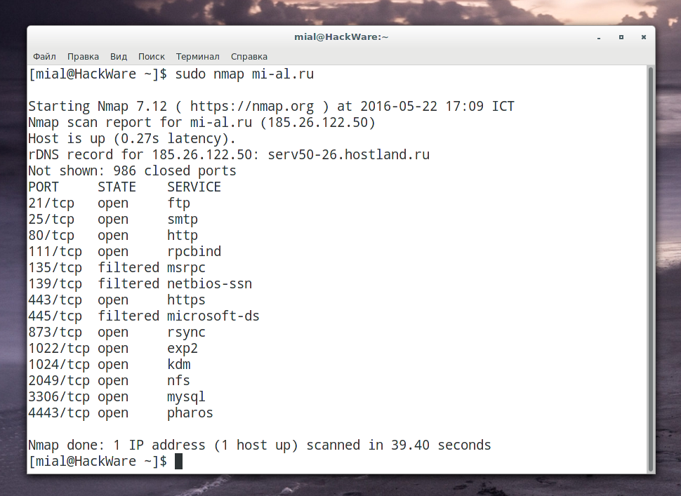
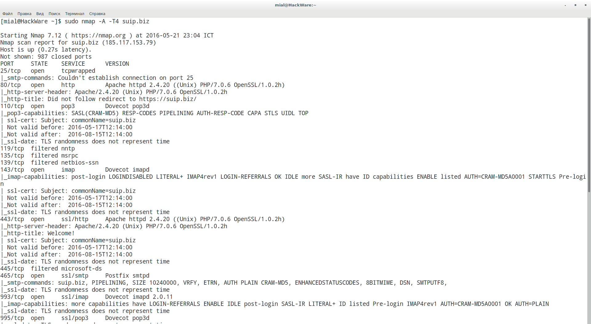
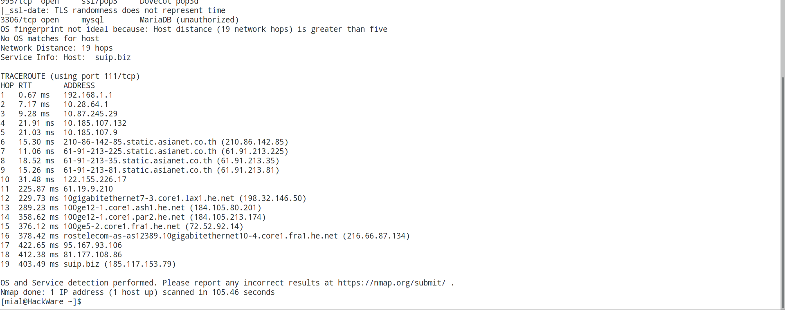

Описание Nmap
Nmap ("Network Mapper") — это утилита с открытым исходным кодом для исследования сети и проверки безопасности. Многие системные администраторы и администраторы сетей также находят её полезной для таких задач как инвентаризация сети, управления расписанием служб обновлений и мониторинга аптайма хостов или служб. Nmap использует сырые IP пакеты новаторским способом, чтобы определить, какие хосты доступны в сети, какие службы (имя и версия приложений) эти хосты предлагают, какие операционные системы (и версии ОС) там запущены, какие типы фильтров пакетов/файерволов используются и дюжины других характеристик. Она была создана для быстрого сканирования больших сетей, но работает и прекрасно работает в отношении единичных хостов. Nmap запускается на всех популярных операционных системах, а официальные исполнимые пакеты доступны для Linux, Windows и Mac OS X. В дополнении к классической версии Nmap комоандной строки, набор Nmap включает продвинутый графический интерфейс и просмотрщик результатов (Zenmap), гибкий инструмент передачи, перенаправления и отладки данных (Ncat), утилиту для сравнения результатов сканирования (Ndiff), и инструмент генерации пакетов и анализа ответов (Nping). Он был даже показан в двенадцати фильмах, включая Матрицу Перезагрузка, Die Hard 4, Girl With the Dragon Tattoo и Ультиматум борна.
Nmap является утилитой …
Домашняя страница: http://insecure.org/
Автор: Fyodor
Лицензия: GPLv2
Справка по Nmap
Использование:
|
nmap [Тип(ы) сканирования] [Опции] {определение цели} |
|
2 3 4 5 6 7 8 9 10 11 12 13 14 15 16 17 18 19 20 21 22 23 24 25 26 27 28 29 30 31 32 33 34 35 36 37 38 39 40 41 42 43 44 45 46 47 48 49 50 51 52 53 54 55 56 57 58 59 60 61 62 63 64 65 66 67 68 69 70 71 72 73 74 75 76 77 78 79 80 81 82 83 84 85 86 87 88 89 90 91 92 93 94 95 96 97 98 99 100 101 102 103 104 105 106 107 108 109 110 |
ОПРЕДЕЛЕНИЕ ЦЕЛИ СКАНИРОВАНИЯ: Можно использовать сетевые имена, IP адреса, сети и т.д. Пример: scanme.nmap.org, microsoft.com/24, 192.168.0.1; 10.0.0-255.1-254 -iL <имя_входного_файла>: Использовать список хостов/сетей из файла -iR <количество_хостов>: Выбрать произвольные цели --exclude <хост1[,хост2][,хост3],...>: Исключить хосты/сети --excludefile <имя_файла>: Исключить список из файла ОБНАРУЖЕНИЕ ХОСТОВ: -sL: Сканирование с целью составления списка - просто составить список целей для сканирования -sn: Пинг сканирование - отключить сканирование портов -Pn: Рассматривать все хосты будто бы они онлайн -- пропустить обнаружение хостов -PS/PA/PU/PY[список_портов]: TCP SYN/ACK, UDP или SCTP обнаружение данных портов пингование заданных портов -PE/PP/PM: Пингование с использованием ICMP эхо запросов, запросов временной метки и сетевой маски -PO[список_протоколов]: Пингование с использованием IP протокола -n/-R: Никогда не производить DNS разрешение/Всегда производить разрешение [по умолчанию: иногда] --dns-servers <сервер1[,сервер2],...>: Задать собственные DNS сервера --system-dns: Использовать системный DNS преобразователь --traceroute: Отслеживать путь к хосту РАЗЛИЧНЫЕ ПРИЕМЫ СКАНИРОВАНИЯ: -sS/sT/sA/sW/sM: TCP SYN/с использованием системного вызова Connect()/ACK/Window/Maimon сканирования -sU: UDP сканирование -sN/sF/sX: TCP Null, FIN и Xmas сканирования --scanflags <флаги>: Задать собственные TCP флаги -sI <зомби_хост[:порт]>: "Ленивое" (Idle) сканирование -sY/sZ: SCTP INIT/COOKIE-ECHO сканирования -sO: Сканирование IP протокола -b <FTP ретранслирующий хост>: FTP bounce сканирование ОПРЕДЕЛЕНИЕ ПОРТОВ И ПОРЯДКА СКАНИРОВАНИЯ: -p <диапазон_портов>: Сканирование только определенных портов Пример: -p22; -p1-65535; -p U:53,111,137,T:21-25,80,139,8080,S:9 --exclude-ports <port ranges>: Exclude the specified ports from scanning -F: Быстрый режим - Сканировать меньше портов чем при сканировании по умолчанию -r: Сканировать порты последовательно - не использовать случайный порядок портов --top-ports <количество_портов>: Сканировать <количество_портов> наиболее распространенных портов --port-ratio <рейтинг>: Сканировать порты с рейтингом большим чем <рейтинг> ОПРЕДЕЛЕНИЕ СЛУЖБ И ИХ ВЕРСИЙ: -sV: Исследовать открытые порты для определения информации о службе/версии --version-intensity <уровень>: Устанавливать от 0 (легкое) до 9 (пробовать все запросы) --version-light: Ограничиться наиболее легкими запросами (интенсивность 2) --version-all: Использовать каждый единичный запрос (интенсивность 9) --version-trace: Выводить подробную информацию о процессе сканирования (для отладки) СКАНИРОВАНИЕ С ИПОЛЬЗОВАНИЕМ СКРИПТОВ: -sC: эквивалентно опции --script=default --script=<Lua скрипты>: <Lua скрипты> это разделенный запятыми список директорий, файлов скриптов или категорий скриптов --script-args=<имя1=значение1,[имя2=значение2,...]>: Передача аргументов скриптам --script-args-file=имя_файла: передать скрипту NSE аргументы в файле --script-trace: Выводить все полученные и отправленные данные --script-updatedb: Обновить базу данных скриптов. --script-help=<Lua скрипты>: Показать помощь о скриптах. <Lua скрипты> разделённый запятой список файлов скриптов или категорий скриптов. ОПРЕДЕЛЕНИЕ ОС: -O: Активировать функцию определения ОС --osscan-limit: Использовать функцию определения ОС только для "перспективных" хостов --osscan-guess: Угадать результаты определения ОС ОПЦИИ УПРАВЛЕНИЯ ВРЕМЕНЕМ И ПРОИЗВОДИТЕЛЬНОСТЬЮ: Опции, принимающие аргумент <время>, задаются в миллисекундах, пока вы не добавите 's' (секунды), 'm' (минуты), или 'h' (часы) к значению (напр. 30m). -T[0-5]: Установить шаблон настроек управления временем (больше - быстрее) --min-hostgroup/max-hostgroup <кол_хостов>: Установить размер групп для параллельного сканирования --min-parallelism/max-parallelism <кол_хостов>: Регулирует распараллеливание запросов --min-rtt-timeout/max-rtt-timeout/initial-rtt-timeout <время>: Регулирует время ожидания ответа на запрос --max-retries <количество_попыток>: Задает максимальное количество повторных передач запроса --host-timeout <время>: Прекращает сканирование медленных целей --scan-delay/--max-scan-delay <время>: Регулирует задержку между запросами --min-rate <число>: Посылать запросы с интенсивностью не меньше чем <число> в секунду --max-rate <число>: Посылать запросы с интенсивностью не больше чем <число> в секунду ОБХОД ФАЙЕРВОЛОВ/IDS И СПУФИНГ: -f; --mtu <значение>: Фрагментировать пакеты (опционально с заданным значениме MTU) -D <фикт_хост1,фикт_хост2[,ME],...>: Маскировка сканирования с помощью фиктивных хостов -S <IP_адрес>: Изменить исходный адрес -e <интерфейс>: Использовать конкретный интерфейс -g/--source-port <номер_порта>: Использовать заданный номер порта --proxies <url1,[url2],...>: Переправлять подключения через прокси HTTP/SOCKS4 --data <hex string>: Append a custom payload to sent packets --data-string <string>: Дописать пользовательскую ASCII строку к отправляемым пакетам --data-length <число>: Добавить произвольные данные к посылаемым пакетам --ip-options <опции>: Посылать пакет с заданным ip опциями --ttl <значение>: Установить IP поле time-to-live (время жизни) --spoof-mac <MAC_адрес/префикс/название производителя>: Задать собственный MAC адрес --badsum: Посылать пакеты с фиктивными TCP/UDP контрольными суммами ВЫВОД РЕЗУЛЬТАТОВ: -oN/-oX/-oS/-oG <файл>: Выводить результаты нормального, XML, s|<rIpt kIddi3, и Grepable формата вывода, соответственно, в заданный файл -oA <базовове_имя_файла>: Использовать сразу три основных формата вывода -v: Увеличить уровень вербальности (используйте -vv или более для усиления эффекта) -d: Увеличить уровень отладки (используйте -dd или более для усиления эффекта) --reason: Отобразить причину, по которой порт в конкретном состоянии --open: Показывать только открытые (или возможно открытые) порты --packet-trace: Отслеживание принятых и переданных пакетов --iflist: Вывести список интерфейсов и роутеров (для отладки) --append-output: Добавлять в конец, а не перезаписывать выходные файлы --resume <имя_файла>: Продолжить прерванное сканирование --stylesheet <путь/URL>: Устанавливает XSL таблицу стилей для преобразования XML вывода в HTML --webxml: Загружает таблицу стилей с Nmap.Org --no-stylesheet: Убрать объявление XSL таблицы стилей из XML РАЗЛИЧНЫЕ ОПЦИИ: -6: Включить IPv6 сканирование -A: Активировать функции определения ОС и версии, сканирование с использованием скриптов и трассировку --datadir <имя_директории>: Определяет место расположения файлов Nmap --send-eth/--send-ip: Использовать сырой уровень ethernet/IP --privileged: Подразумевать, что у пользователя есть все привилегии --unprivileged: Подразумевать, что у пользователя нет привилегий для использования сырых сокетов -V: Вывести номер версии -h: Вывести эту страницу помощи. ПРИМЕРЫ: nmap -v -A scanme.nmap.org nmap -v -sn 192.168.0.0/16 10.0.0.0/8 nmap -v -iR 10000 -Pn -p 80 |
Руководство по Nmap
ИМЯ
nmap – Утилита для исследования сети и сканер безопасности / портов
СИНОПСИС
|
nmap [Тип сканирования...] [Опции] {цель сканирования} |
ОПИСАНИЕ
Nmap (“Network Mapper”) это утилита с открытым исходным кодом для исследования сети и проверки безопасности. Она была разработана для быстрого сканирования больших сетей, хотя прекрасно справляется и с единичными целями. Nmap использует сырые IP пакеты оригинальными способами, чтобы определить какие хосты доступны в сети, какие службы (название приложения и версию) они предлагают, какие операционные системы (и версии ОС) они используют, какие типы пакетных фильтров/брандмауэров используются и еще дюжины других характеристик. В тот время как Nmap обычно используется для проверки безопасности, многие сетевые и системные администраторы находят ее полезной для обычных задач, таких как контролирование структуры сети, управление расписаниями запуска служб и учет времени работы хоста или службы.
Выходные данные Nmap это список просканированных целей с дополнительной информацией по каждой в зависимости от заданных опций. Ключевой информацией является “таблица важных портов”. Эта таблица содержит номер порта, протокол, имя службы и состояние. Состояние может иметь значение open (открыт), filtered (фильтруется), closed (закрыт) или unfiltered (не фильтруется).
Открыт означает, что приложение на целевой машине готово для установки соединения/принятия пакетов на этот порт. Фильтруется означает, что брандмауэр, сетевой фильт или какая-то другая помеха в сети блокирует порт, и Nmap не может установить открыт этот порт или закрыт. Закрытые порты не связаны ни с каким приложение, так что они могут быть открыты в любой момент. Порт классифицируется как не фильтруется, когда они отвечают на зонды Nmap, но Nmap не может определить, они открыты или закрыты. Nmap сообщает о состоянии портов комбинациями открыт|фильтруется и закрыт|фильтруется, когда он не может определить, какое из двух состояний описывает порт. Если был запрос на определение версии, таблица портов также может включать подробности о версии программного обеспечения. Когда запрошено сканирование IP протокола (-sO), Nmap поставляет информацию о поддерживаемых IPпротоколах, а не о прослушиваемых портах.
В дополнение к таблице важных портов Nmap может предоставлять дальнейшую информацию о целях: преобразованные DNS имена, предположение о используемой операционной системе, типы устройств и MAC адреса.
Типичное сканирование с использованием Nmap показано в Примере 1. Единственные аргументы, использованные в этом примере это -A, для определения версии ОС, сканирования с использованием скриптов и трассировки; -T4 для более быстрого выполнения; затем целевой хост.
Пример 1. Типичный пример сканирования с помощью Nmap
|
2 3 4 5 6 7 8 9 10 11 12 13 14 15 16 17 18 19 20 21 22 23 24 25 26 27 28 |
sudo nmap -A -T4 scanme.nmap.org
Nmap scan report for scanme.nmap.org (74.207.244.221) Host is up (0.029s latency). rDNS record for 74.207.244.221: li86-221.members.linode.com Not shown: 995 closed ports PORT STATE SERVICE VERSION 22/tcp open ssh OpenSSH 5.3p1 Debian 3ubuntu7 (protocol 2.0) | ssh-hostkey: 1024 8d:60:f1:7c:ca:b7:3d:0a:d6:67:54:9d:69:d9:b9:dd (DSA) |_2048 79:f8:09:ac:d4:e2:32:42:10:49:d3:bd:20:82:85:ec (RSA) 80/tcp open http Apache httpd 2.2.14 ((Ubuntu)) |_http-title: Go ahead and ScanMe! 646/tcp filtered ldp 1720/tcp filtered H.323/Q.931 9929/tcp open nping-echo Nping echo Device type: general purpose Running: Linux 2.6.X OS CPE: cpe:/o:linux:linux_kernel:2.6.39 OS details: Linux 2.6.39 Network Distance: 11 hops Service Info: OS: Linux; CPE: cpe:/o:linux:kernel
TRACEROUTE (using port 53/tcp) HOP RTT ADDRESS [Cut first 10 hops for brevity] 11 17.65 ms li86-221.members.linode.com (74.207.244.221)
Nmap done: 1 IP address (1 host up) scanned in 14.40 seconds |
Самую новую версию Nmap можно скачать с https://nmap.org. Самая новая версия страницы справки Nmap (man page) расположена на https://nmap.org/book/man.html.
ОПРЕДЕЛЕНИЕ ЦЕЛИ СКАНИРОВАНИЯ
В командной строке Nmap все, что не является опцией (или аргументом опции), рассматривается как цель сканирования. В простейшем случае для сканирования используется IP адрес или сетевое имя целевой машины.
Иногда необходимо просканировать целую сеть. Для этого Nmap поддерживает CIDR адресацию. Вы можете добавить /кол-во бит к IP адресу или сетевому имени и Nmap просканирует каждый IP адрес, для которого первые кол-во бит такие же как и у заданного хоста. Например, 192.168.10.0/24 просканирует 256 хостов между 192.168.10.0 (бинарное: 11000000 10101000 00001010 00000000) и 192.168.10.255 (бинарное: 11000000 10101000 00001010 11111111) включительно. 192.168.10.40/24 сделает абсолютно то же самое. Зная, что IP адрес scanme.nmap.org 64.13.134.52, при записи типа scanme.nmap.org/16 будет произведено сканирование 65,536 IP адресов между 64.13.0.0 и 64.13.255.255. Наименьшее допустимое значение /0, при котором будет просканирован весь Интернет. Наибольшее значение /32, при котором будет просканирован только заданный хост или IP адрес, т.к. все адресные биты заблокированы.
CIDR нотация коротка, однако не всегда достаточно гибка. Например, вы хотите просканировать 192.168.0.0/16, но пропустить все IP-ки оканчивающиеся на .0 или .255, т.к. обычно это широковещательные адреса. Nmap может осуществить такое сканирование путем задания диапазонов в октетах. Вместо определния обычного IP адреса, вы можете определить для каждого октета либо разделенный запятыми список чисел, либо диапазон. Например, 192.168.0-255.1-254 пропустит все адреса в диапазоне оканчивающиеся на .0 и .255. Диапазоны не обязательно задавать только в последних октетах: при записи 0-255.0-255.13.37 будет произведено сканирование всех адресов в Интернете оканчивающихся на 13.37. Такой тип сканирования может быть полезен для обозрения просторов Интернета и различных исследований.
IPv6 адреса могут быть определны только в форме, полностью соответствующей правильной форме записи IPv6 адресов или с CIDR для подсетей. Использование диапазонов в октетах ещё не поддерживается для IPv6.
IPv6 адреса не глобальной видимости, должны иметь суффикс зоны ID. На системах Unix это знак процента, за которым идёт имя интерфейса; полный адрес может быть fe80::a8bb:ccff:fedd:eeff%eth0. На Windows используйте номер индекса интерфейса вместо имени интерфейса: fe80::a8bb:ccff:fedd:eeff%1. Вы можете увидеть индекс списка интерфейсов запуском команды netsh.exe interface ipv6 show interface.
Вы можете передавать в командной строке Nmap различные варианты определения целей, не обязательно одного типа. Команда nmap scanme.nmap.org 192.168.0.0/8 10.0.0,1,3-7.- сделает то, что вы ожидаете.
Цели сканирования обычно задаются в командной строке, и существуют различные опции контроля выбора целей:
-iL имя_файла (Ввод из списка)
Считывает цели из имя_файла. Хотя передача большого списка хостов для сканирования является обычным явлением, это не удобно. Например, ваш DHCP сервер передают вам список из 10,000 используемых им на данный момент адресов, и вы хотите его просканировать. Или, возможно, вы хотите просканировать все IP адреса, кроме переданных им, чтобы выявить несанкционированное использование статических IP адресов. Просто сгенерируйте список хостов для сканирования и передайте имя файла в Nmap как аргумент для -iL опции. Записи в файле могут находиться в любой приемлимой для Nmap форме (IP адреса, сетевые имена, CIDR, IPv6, или диапазоны в октетах). Каждая запись должна быть отделена пробелом или несколькими, символами табуляции или символами перехода на новую строку. Вы можете передать в качестве аргумента дефис(-) как имя файла, если хотите, чтобы Nmap считывала список хостов из стандартного ввода, а не из файла.
Ввод может содержать комментарии, которые начинаются с # и продолжаются до конца строки.
-iR кол-во хостов (Выбирает произвольные цели)
Для сканирования в пределах всего Интернета или каких-либо исследований, вам, возможно, понадобится выбрать цели произвольно. Аргумент кол-во хостов определяет сколько необходимо сгенерировать IP адресов. Неподходящие IP адреса, такие как частные, широковещательные или нелокализованные диапазоны адресов автоматически пропускаются. Аргумент 0 может быть передан для бесконечного сканирования. Имейте в виду, что некоторым системным администраторам может не понравиться неразрешенное сканирование их сетей и они могут пожаловаться. Используйте эту опцию на свой страх и риск! Если в дождливый денек вам будет скучно, попробуйте команду nmap -Pn -sS -p 80 -iR 0 –open для сканирования произвольных веб-серверов.
–exclude хост1[,хост2[,…]] (Исключить хосты/сети)
Определяет разделенный запятыми список целей, которые необходимо исключить из сканирования, даже если они являются частью заданного вами диапазона сканирования. Передаваемый список использует стандартный синтаксис Nmap, поэтому может содержать сетевые имена, CIDR адресацию, диапазоны в октетах и т.д. Эта опция может быть полезна, если сеть, которую вы хотите просканировать, содержит сервера или системы, негативно реагирующие на сканирование портов, или подсети, администрируемые другими людьми.
–excludefile имя_файла (Исключить список из файла)
Эта опция делает то же самое, что и –exclude, за исключением того, что цели для исключения находятся в разделенном пробелами, символами табуляции или символами перехода на новую строку файле, а не в командной строке.
Ввод может содержать комментарии, которые начинаются с # и продолжаются до конца строки.
Одна из первейших задач при исследовании любой сети это сократить (иногда довольно большой) набор IP диапазонов до списка активных или интересных хостов. Сканирование каждого порта каждого IP адреса медленно и необязательно. Конечно же то, что делает хост интересным для исселедования во многом определяется целями сканирования. Сетевые администраторы возможно будут заинтересованы только в хостах, на которых запущена определенная служба, в то время как тем, кого интересует безопасность, будут интересны все устройства с IP адресами. Задачи администраторов по обнаружению работающих хостов в сети могут быть удовлетворены обычным ICMP пингом, людям же, которые тестируют способность сети противостоять атакам из вне, необходимо использовать разнообразные наборы запросов с целью обхода брандмауэра.
Посколько задачи требующие обнаружения хостов столь различны, Nmap предоставляет большое разнообразие опций для различных методов. Задачу обнаружения хостов иногда называют пинг сканированием (ping scan), однако она намного превосходит использование обычных ICMP запросов ассоциирующихся с вездесущими ping утилитами. Пользователи могут полностью пропустить шаг пинг сканирования с помощью опции сканирования с целью составления списка (-sL) или просто отключив его (-Pn), или сканировать сеть с помощью произвольных комбинаций мультипортовых TCP SYN/ACK, UDP, SCTP INIT и ICMP запросов. Целью всех этих запросов является получение ответов, указывающих, что IP адрес в настоящее время активен (используется хостом или сетевым устройством). В большинстве сетей лишь небольшой процент IP адресов активен в любой момент времени. Это особенно характерно для адресных пространств вида 10.0.0.0/8. Такие сети имеют 16 млн. IP адресов, но я видел, как они используются компаниями, в которых не более тысячи машин. Функция обнаружения хостов может найти эти машины в этом необъятном море IP адресов.
Если никакие параметры обнаружения хостов не даны, Nmap посылает эхо запрос ICMP, пакет TCP SYN на порт 443, пакет TCP ACK на порт 80 и ICMP запрос метки времени. (Для IPv6 ICMP запрос метки времени пропускается, поскольку это не часть ICMPv6.) Это поведение по умолчанию эквивалентно опциям -PE -PS443 -PA80 -PP. За исключением ARP (для IPv4) и Neighbor Discovery (обнаружение соседей) (для IPv6) сканирований, которые используются для любых целей в локальной ethernet сети. Для непривилегированных пользователей оболочки Unix, дефолтными зондами являются пакет SYN на порт 80 и 443 с использованием системного вызова connect. Это обнаружение хостов часто бывает достаточным при сканировании локальных сетей, для аудита безопасности рекомендуется более сложный набор.
Опции -P* (определяющие тип пинг сканирования) могут комбинироваться. Вы можете увеличить шансы обхода строго брандмауэра посылая множество запросов различных типов, используя различные TCP порты/флаги и ICMP коды. Также имейте в виду, что даже если вы определите различные -P* опции, по умолчанию применительно к целям локальной сети будет производиться и ARP сканирование (-PR), поскольку почти всегда она оказывается более быстрой и более эффективной.
По умолчанию после обнаружения хостов Nmap начинает сканирование портов каждой активной машины. Так будет, даже если вы укажите на использование нестандартных методов обнаружения хостов, например, с использованием UDP запросов (-PU). Прочтите об опции -sn, чтобы узнать, как выполнить только обнаружение хостов, или используйте опцию -Pn, чтобы пропустить обнаружение хостов и осуществить сканирование портов всех целевых машин. С помощью следующих опций можно настраивать функцию обнаружения хостов:
-sL (Сканирование с целью составления списка)
Это тип сканирования является "упрощенной" версией функции обнаружения хостов, при помощи которого просто будет создан список хостов заданной сети без посылки каких-либо пакетов целевым машинам. По умолчанию Nmap все же будет осуществлять обратное разрешение DNS с целью узнавания имен хостов. Часто бывает удивительно, как много полезной информации могут содержать обычные имена хостов. Например, fw.chi это имя брандмауэра одной Чикагской компании.
В конце Nmap также сообщает общее количество IP адресов. Этот тип сканирования также является хорошим способом проверить, что вы действительно знаете IP адреса необходимых вам целей. Если имена хостов содержат неизвестные вам доменные имена, то стоит провести дальнейшее исследование, чтобы избежать сканирования сети не той компании, которая вам нужна.
Т.к. целью является просто составление списка целевых хостов, то опции с большим уровнем функциональности, такие как сканирование портов, определение ОС или пинг сканирование не могут сочетаться с рассматриваемой опцией. Если вы хотите отключить пинг сканирование, но хотите использовать опции с таким высоким уровнем функциональности, то почитайте об опции -Pn (пропустить пинг).
-sn (Без сканирования портов)
Эта опция говорит Nmap не выполнять сканирование портов после обнаружения хоста, а только напечатать доступные хосты, которые ответили на запросы обнаружения хостов. Это хорошо известно как "пинг сканирование", но вы также можете запросить построение маршрута (traceroute) и натравить на цель NSE скрипт. В том виде, как оно есть по умолчанию, это на один шаг более навязчиво, чем построение списка хостов и часто может быть использовано для тех же целей. Это позволяет провести лёгкую разведку целевой сети без привлечения слишком большого внимания. Знание как много хостов работают более ценно для атакующих, чем список поставляемый сканированием по построению списка каждого отдельного IP и имени хоста.
Часто системные администраторы также находят эту опцию полезной. Она с лёгкостью может использоваться для подсчёта доступных машин в сети или контроля доступности сервера. Это часто называется ping sweep и более надёжно, чем широковещательный адрес, поскольку многие хосты на отвечают на широковещательные запросы.
По умолчанию обнаружение хостов, проводимое с -sn, состоит из эхо запроса ICMP, TCP SYN на порт 443, TCP ACK на порт 80 и запрос временной метки ICMP. При выполнении от непривилегированного пользователя, отправляются только SYN пакеты (используя вызов connect) на порт 80 и 443 цели. Когда привилегированный пользователь пробует сканировать цели в локальной ethernet сети, используются ARP запросы, если не указана опция –send-ip. Опция -sn может быть объединена с любым типом обнаруживающих зондов (-P* опции, за исключением -Pn) для большей гибкости. Если используются какие-либо из этих типов зондирования и опций номеров портов, зонды по умолчанию переписываются. Когда имеется строгий файервол между хостом источником с запущенным Nmap и целевой сетью, рекомендуется использование тех продвинутых техник. Иначе хосты могут быть пропущены, когда файервол отбрасывает зондирующие запросы или их ответы.
В предыдущих релизах Nmap, -sn была изввестна как -sP.
-Pn (Не использовать пинг сканирование)
Указывает Nmap полностью пропустить этап обнаружения хостов. Обычно, Nmap использует этот этап для обнаружения активных машин, к которым можно применить более углубленное сканирование. По умолчанию Nmap производит углубленное сканирование, такое как сканирование портов, определение версии или определение ОС только обнаруженных работающих хостов. После отключения этапа обнаружения хостов опцией -Pn, Nmap будет производить сканирование каждого заданого целевого IP адреса. Так что, если для сканирования будет определена сеть с адресным пространством класса B (/16), то будет произведено сканирование всех 65,536 IP адресов. Т.к. этап обнаружения хостов и составления списка целей сканирования пропущен, то Nmap будет исполнять запрошенные функции, как если бы каждый IP адрес был активен. Для пропуска пинг сканирования и сканирования портов, при этом позволяя запуск NSE, используйте две опции вместе -Pn -sn.
Для машин локальной сети будет произведено ARP сканирование (пока не зададите –disable-arp-ping или –send-ip), т.к. Nmap необходимы MAC адреса для дальнейшего сканирования целевых хостов. Раньше эта опция задавалась флагом –P0 (используется нуль) и -PN, но была переименова, чтобы избежать путаницы с пингованием с использованием IP протокола PO (используется буква O).
-PS список_портов (TCP SYN пингование)
Эта опция посылает пустой TCP пакет с установленным SYN флагом. Порт по умолчанию – 80 (можно задать во время компилирования изменяя DEFAULT_TCP_PROBE_PORT_SPEC в nmap.h). Альтернативные порты задаются в качестве параметров. Синтаксис такой же как и для опции -p за исключением того, что спецификаторы типа T: недопустимы. Примеры: -PS22 и -PS22-25,80,113,1050,35000. Имейте в виду, что между списком портов и -PS не должно быть пробела. Если заданы несколько запросов, то они будут посланы параллельно.
Установленные флаг SYN указывает удаленной системе, что вы пытаетесь установить соединение. Если порт назначения закрыт, то в ответ посылается RST (сброс) пакет. Если порт открыт, то удаленная система предпримет второй шаг в 3-ех этапной последовательности установки TCP соединения путем ответа SYN/ACK TCP пакетом. Система, на которой работает Nmap, сбрасывает почти установленное соединение отвечая RST пакетом вместо ACK, что привело бы к установке полного соединения. RST пакет посылается ядром системы, на которой работает Nmap, в ответ на непредвиденный SYN/ACK пакет, а не самой Nmap.
Nmap не важно открыт порт или закрыт. Ответы пакетами RST или SYN/ACK описанными выше, указывают Nmap на то, что хост доступен и может отвечать на запросы.
На Unix машинах, обычно только пользователь с правами root способны отправлять и получать сырые TCP пакеты. Для непривилегированного пользователя автоматически применяется обходной путь, при котором для каждого целевого порта инициируется системный вызов connect. Поэтому при попытке установить соединение на целевой хост посылается SYN пакет. Если на вызов connect приходит быстрый ответ или отказ типа ECONNREFUSED, значит TCP стек получил SYN/ACK или RST пакет, и хост помечается как доступный. Если соединение не устанавливается по причине истечения времени (timeout), то хост помечается как не работающий.
-PA список_портов (TCP ACK пингование)
Этот тип пингования очень похож на описанный выше SYN пингование. Разница состоит в том, как вы могли догадаться, что вместо установки SYN флага устанавливается TCP ACK флаг. Такой ACK пакет имеет своей целью распознавание данных во время установленного TCP соединения, но такого соединения не существует, поэтому удаленные хосты всегда будут отвечат на такой запрос RST пакетом, тем самым выдавая свое существование.
Опция -PA использует тот же порт по умолчанию, что и SYN запросы (80), и так же может принимать в качестве параметра список портов в том же формате. Если эту опцию пытается использовать непривилегированный пользователь или задана цель в формате IPv6, то используется механизм с использованием вызова connect описанный выше. Этот механизм несовершенен, т.к. при использовании вызова connect вместо ACK пакета посылается SYN.
Причина, по которой Nmap предоставляет оба типа пингования (SYN и ACK), состоит в повышении шансов обхода брандмауэров. Многие администраторы конфигурируют роутеры или другие простые брандмауэры на блокировку входящих SYN пакетов за исключением тех, что предназначены для публичных служб, таких как веб сайт или почтовый сервер. Тем самым предотвращаются все остальные соединения, и в то же время пользователи могут беспрепятственно выходить в Интернет. Такой подход не требует много ресурсов от брандмауэров/роутеров и широко поддерживается различными аппаратными и программными фильтрами. Файерволы под Linux Netfilter/iptables для реализации такого подхода имеет опцию –syn. Когда брандмауэр использует такие правила, то запросы с установленным флагом SYN (-PS), посланные на закрытые порты, с большой вероятностью будут заблокированы. В таких случаях более выгодно использовать запросы с флагом ACK, т.к. они не попадают под эти правила.
Другим популярным типом сетевого экрана является брандмауэр блокирующий все непредвиденные пакеты. Изначально эта функция поддерживалась только в наиболее продвинутых брандмауэрах, хотя с годами она становится все популярнее. Использующийся в Linux сетевой экран Netfilter/iptables реализует этот механизм с помощью опции –state, которая категоризирует пакеты в зависимости от состояния соединения. Против таких систем лучше использовать пакеты SYN, т.к. непредвиденные пакеты ACK с большой вероятностью будут распознаны как фиктивные и заблокированы. Решение такого затруднительного положение состоит в том, чтобы посылать и SYN и ACK запросы путем задания опций -PS и -PA.
-PU список_портов (UDP пингование)
Еще одной функцией используемой для обнаружения хостов является UDP пингование, которая посылает UDP пакет на данные порты. Для большинства портов пакеты будут пустыми, хотя некоторые используют специфичные для протокола запросы, которые с большей вероятностью вызовут ответ. База данных запросов описана в https://nmap.org/book/nmap-payloads.html и в опциях –data, –data-string и –data-length.
Список портов задается в том же формает, что и для описанных выше опций -PS и -PA. Если порты не заданы, то по умолчанию используется 40125. Порт по умолчанию может быть задан во время компиляции путем изменения DEFAULT_UDP_PROBE_PORT_SPEC в nmap.h. По умолчанию выбран не распростаненный порт, т.к. отправка запросов на открытые порты нежелательна для этого типа сканирования.
При простукивании закрытого порта на целевой машине целью запроса UDP является получение в ответ ICMP пакета с ошибкой "порт недостижим". Это указывает Nmap на то, что машина работает и доступна. Другие типы ICMP ошибок, такие как хост/сеть недоступна или превышение TTL указывают на то, что машина выключена или недоступна. Отсутствие ответа интерпретируется этим же путем. Если такой запрос посылается на открытый порт, то большинство служб просто игнорируют пустой пакет и не посылают никакого ответа. Поэтому портом по умолчанию является 40125, т.к. он вряд ли будет использоваться какой-либо службой. Лишь некоторые службы, такие как Character Generator (chargen) protocol, ответят на пустой UDP пакет, и это также укажет Nmap на то, что машина доступна.
Основным преимуществом такого типа сканирования является то, что он позволяет обходить брандмауэры, фильтрующие только TCP запросы. Например, однажды у меня был беспроводной широкополосный роутер Linksys BEFW11S4. Внутренний интерфейс этого устройства фильтровал по умолчанию все TCP порты, в то время как в ответ на UDP запросы посылалось сообщение об ошибке "порт недостижим", что выдавало устройство.
-PY список_портов (SCTP INIT пингование)
Эта опция отсылает SCTP пакеты содержащие минимальный кусок INIT. Портом назначения по умолчанию является 80 (можно настроить во время компиляции изменив DEFAULT_SCTP_PROBE_PORT_SPEC в nmap.h). Альтернативные порты можно передать в качестве параметров. Синтаксис такой же как и для -p за исключением того, что тип портов, заданные как S, не разрешены. Примеры: -PY22 и -PY22,80,179,5060. Помните, что может не быть пробела между -PY и списком портов. Если задано несколько зондов, то они будут отправлены параллельно.
Кусок INIT предлагает удалённой системе установить с вами свзяь. Обычно порт назначения окажется закрытым и обратно будет выслан кусок ABORT. Если случится так, что порт открыт, то цель предпримет второй шак из четырёхстороннего рукопожатия SCTP, который будет заключаться ответом курском INIT-ACK. Если машина, на которой работает Nmap, имеет функциональный стэк SCTP, то он срывает нарождающуюся ассоциацию отвечая куском ABORT, а не отправкой куска COOKIE-ECHO, который был бы следующим шагом в четырёхстороннем рукопожатии. Пакет ABORT отправляется не программой Nmap, а ядром машины, на которой работает Nmap в ответ на неожиданный INIT-ACK.
Nmap не заботит, открыт порт или закрыт. Что ответ ABORT, что INIT-ACK говорят Nmap, что хосты доступны и отвечают.
На Unix только привилегированный пользователь root, обычно, способен отправлять и получать SCTP пакеты. В настоящее время использование SCTP INIT пингования не доступно для непривилегированных пользователей.
-PE; -PP; -PM (Типы пинг пакетов ICMP)
В дополнении к нестандратным методам обнаружения хостов с помощью TCP, UDP и SCTP запросов, Nmap может посылать и стандартные пакеты, используемые вездесущей программой ping. Nmap посылает ICMP пакет типа 8 (эхо запрос) на целевой IP адрес, ожидая в ответ от доступного хоста пакет типа 0 (эхо ответ). К сожалению для сетевых исследователей, многие хосты и брандмауэры теперь блокируют такие пакеты вместо того, чтобы ответить на них, как это требуется в RFC 1122. По этой причине сканеры использующе только ICMP запросы редко бывают полезны при сканировании неизвестных целей в Интернете. Но они могут быть полезны системным администраторам, занимающимся мониторингом внутренней сети. Используйте опцию -PE, чтобы активировать такой тип сканирования.
Но Nmap использует не только стандратный эхо запрос. В стандартах ICMP (RFC 792 и RFC 950) также определены запросы временной метки, информационные запросы и запросы адресной маски с кодами 13, 15 и 17 соответственно. Хотя они служат для того, чтобы узнать какую-либо информацию, такую как адресную маску или текущее время, они могут быть легко применены для обнаружения целей. Система, которая отвечает на них, работает и доступна. В настоящее время Nmap не использует информационные запросы, т.к. они не получиил широкого распространения. Стандарт RFC 1122 наставивает на том, что “хост НЕ ДОЛЖЕН посылать такие сообщения”. Запросы временной метки или адресной маски могут быть посланы путем задания опций -PP и -PM соответственно. Ответ на запрос временной метки (ICMP код 14) или на запрос адресной маски (код 18) указывают на то, что хост доступен. Эти запросы могут быть полезны, когда администраторы блокируют пакеты эхо запросов, но забывают о том, что другие типы ICMP запросов могут быть использованы в тех же целях.
-PO список_протоколов (пингование с использованием IP протокола)
Одной из новейщих опций для обнаружения хостов является пингование с использованием IP протокола, которая посылает IP пакеты с номером протокола, указанным в заголовке пакета. Список протоколов задается в том же формате, что и список портов в описанных выше опциях обнаружения хостов с помощью протоколов TCP, UDP и SCTP. Если не указан ни один протокол, то по умолчанию будут использованы IP пакеты ICMP (протокол 1), IGMP (протокол 2) и IP-in-IP (протокол 4). Протоколы по умолчанию могут быть заданы во время компиляции путем изменения DEFAULT_PROTO_PROBE_PORT_SPEC в nmap.h. Имейте в виду, что для ICMP, IGMP, TCP (протокол 6), UDP (протокол 17) и SCTP (протокол 132) пакеты посылаются с "правильными" заголовками протокола, в то время как для остальных протоколов пакеты посылаются без дополнительной информации после IP заголовка (пока не задана опция –data, –data-string или –data-length).
При использовании этого метода ожидаются ответы по протоколу исходного запроса, либо ICMP сообщение о недостижимости, что свидетельствует о том, что данный протокол не поддерживается удаленным хостом. Оба варианта ответа означают, что целевой хост доступен.
-PR (ARP пингование)
Одной из наиболее популярных сфер применения Nmap является сканирование локальных сетей (LAN). В большинстве локальных сетей, особенно тех, которые используют диапазоны частных адресов определенные в RFC 1918, большое количество IP адересов не используется в любой момент времени. Когда Nmap пытается послать сырой IP пакет, такой как ICMP эхо запрос, операционная система должна определить MAC-адрес (ARP) соответствующий целевому IP, чтобы правильно адресовать фрейм. Это часто бывает медленно и проблематично, т.к. операционные системы не были написаны с учетом того, что им придется посылать миллионы ARP запросов недоступным хостам в короткий промежуток времени.
ARP сканирование позволяет Nmap вместо ARP запросов использовать свои собственные оптимизированные алгоритмы. И если Nmap получает ответ, то ей даже нет необходимости беспокоиться о других типах обнаружения хостов, основанных на IP пакетах. Этот делает ARP сканирование более быстрым и надежным, чем основанные на IP сканирования. Поэтому оно применяется по умолчанию для сканирования локальных сетей. Даже если указаны другие типы сканирования (как -PE или -PS), Nmap все равно использует ARP сканирование для машин локальной сети. Если вы абсолютно не хотите использовать такой тип сканирования, то задайте опцию –disable-arp-ping.
Для IPv6 (опция -6), -PR использует ICMPv6 Neighbor Discovery (обнаружение соседей) вместо ARP. Neighbor Discovery, как определено в RFC 4861, можно рассматривать как IPv6 эквивалент ARP.
–disable-arp-ping (Без пинга ARP или ND) .
Обычно Nmap выполняет обнаружение ARP или IPv6 Neighbor Discovery (ND) подключённых локально ethernet хостов даже если используются другие опции обнаружения, такие как -Pn или -PE. Для отключения этого неявного поведения используйте опцию –disable-arp-ping.
Поведение по умолчанию обычно быстрее, но эта опция полезна в сетях, использующих прокси ARP, в которых роутер предположительно отвечает на все ARP запросы, создавая видимость, что любая цель доступна в соответствии с ARP сканированием.
–traceroute (Отслеживать путь к хосту)
Отслеживание осуществляется после сканирования, используя результаты этого сканирования для определения порта и протокола, с помощью которых можно будет достичь цели. Процедура работает со всеми типами сканирования кроме сканирования с использованием системного вызова connect (-sT) и "ленивого" (idle) сканирования (-sI). Все отслеживания используют динамическую модель таймингов Nmap и осуществляются параллельно.
Процедура отслеживания маршрута работает путем посылки пакетов с низким TTL (time-to-live – временем-жизни) в попытке получить в ответ ICMP сообщение Time Exceeded (Превышение Времени Жизни) от промежуточных узлов между сканером и целевым хостом. Стандартные реализации процедуры отслеживания маршрута начинают с TTL равным 1, а затем увеличивают его до тех пор, пока не будет достигнут целевой хост. В реализации же этой процедуры в Nmap сначала устанавливается высокий TTL, а затем TTL уменьшается, пока не станет равным 0. Это позволяет Nmap использовать "умные" алгоритмы кэширования с целью увеличения скорости отслеживания маршрута. В среднем Nmap посылает 5-10 пакетов на хост, в зависимости от условий в сети. В случае сканирования единственной подсети (напр. 192.168.0.0/24), возможно будет необходимо послать только один пакет на каждый хост.
-n (Без преобразования DNS)
Указывает Nmap никогда не производить обратное разрешение DNS имен каждого обнаруженного активного IP адереса. Преобразование DNS может быть медленным даже со встроенным в Nmap параллельным преобразователем IP адресов, поэтому данная опция может сократить время сканирования.
-R (Производить разрешение DNS имен для всех целей)
Указыват Nmap всегда производить обратное разрешение DNS имен для каждого целевого IP адреса. Обычно DNS преобразование применяется только к доступным хостам.
–resolve-all (Сканировать каждый адрес хоста, полученный в результате распознования имени хоста)
Если целевое имя хоста распознано в более чем один адрес, просканировать их все. Поведением по умолчанию является сканирование первого полученного адреса. Не смотря на опцию, будут просканированы только адреса из соответствующего семейства адресов: IPv4 по умолчанию, IPv6 с -6.
–system-dns (Использовать системный DNS распознователь)
По умолчанию Nmap преобразует IP адреса путем посылки запросов непосредственно серверам имен, указанным в вашей системе, и последующим анализом ответов. Многие запросы (часто десятки) исполняются параллельно для увеличения производительности. Задайте эту опцию, чтобы использовать ваш системный преобразователь IP адресов (один IP адрес за один системный вызов getnameinfo). Это медленно и редко бывает полезно, до тех пор, пока вы не найдете ошибку в параллельном преобразователе Nmap (если найдете, известите нас, пожалуйста). Системный преобразователь всегда используется для сканирования с использованием протокола IPv6.
–dns-servers server1[,server2[,…]] (Сервера для обратного разрешения DNS)
По умолчанию Nmap определяет DNS сервера (для разрашения rDNS) из вашего resolv.conf файла (Unix) или из реестра (Win32). Вы можете использовать эту опцию для задания альтернативных серверов. Эта опция игнорируется, если вы используете –system-dns или сканирование по протоколу IPv6. Использование нескольких DNS серверов частно увеличивает скорость сканирования, особенно если вы выбираете официальные сервера для IP пространства вашей цели. Эта опция также может увеличить незаметность, т.к. ваши запросы могут быть перенаправлены любым рекурсивным DNS сервером в Интернете.
Эта опция также бывает полезна при сканировании частных сетей. Иногда лишь некоторые сервера имен предоставляют правильную rDNS информацию, и вы можете даже не знать, где они. Вы можете просканировать сеть на наличие открытого порта 53 (возможно с помощью фукнкции определения версии), затем попробовать составить список (-sL) указывая по очереди все сервера имен в опции –dns-servers до тех пор, пока не найдете тот, который работает.
Эта опция может не учитываться, если ответ DNS превышает размер UDP-пакета. В такой ситуации наш DNS-распознаватель приложит все усилия, чтобы извлечь ответ из усеченного пакета, и в случае неудачи он обратится к использованию системного распознавателя. Кроме того, ответы, содержащие псевдонимы CNAME, будут возвращаться к системному распознавателю.
ОСНОВЫ СКАНИРОВАНИЯ ПОРТОВ
Хотя Nmap постоянно наращивала функциональность, изначально утилита разрабатывалась как эффективный сканер портов, и она по-прежнему сохраняет свои основные функции. Простой командой nmap цель сканирования будет произведено сканирование 1000 TCP портов на целевой машине. В то время как многие сканеры портов традиционно разделяют все порты на закрытые и открытые, Nmap имеет более подробную шкалу деления. Она подразделяет порты на шесть состояний: открыт, закрыт, фильтруется, не фильтурется, открыт|фильтруется или закрыт|фильтруется.
Эти состояния не являются собственно характеристиками самих портов, а лишь описывают, как Nmap видит их. Например, сканирование из той же сети, что и цель, может показать, что порт 135/tcp открыт, в то время как сканирование из Интернета в то же время и с теми же опциями может показать, что порт фильтруется.
Шесть состояний портов распознаваемых Nmap
Открыт: Приложение принимает запросы на TCP соединение, UDP пакеты или SCTP ассоциации на этот порт. Обнаружение этого состояния обычно является основной целью сканирования. Люди разбирающиеся в безопасности знают, что каждый открытый порт это прямой путь к осуществлению атаки. Атакующие хотят использовать открытые порты, а администраторы пытаются закрыть их или защитить с помощью брадмауэров так, чтобы не мешать работе обычных пользователей. Октрытые порты также интересны с точки зрения сканирования, не связанного с безопасностью, т.к. они позволяют определить службы доступные в сети.
Закрыт: Закрытый порт доступен (он принимает и отвечает на запросы Nmap), но не используется каким-либо приложением. Они могут быть полезны для установления, что по заданному IP адресу есть работающий хост (определение хостов, ping сканирование), или для определения ОС. Т.к. эти порты достижимы, может быть полезным произвести сканирование позже, т.к. некоторые из них могут открыться. Администраторы могут заблокировать такие порты с помощью брандмауэров. Тогда их состояние будет определено как фильтруется, что обсуждается далее.
Фильтруется: Nmap не может определить, открыт ли порт, т.к. фильтрация пакетов не позволяет достичь запросам Nmap этого порта. Фильтрация может осуществляться выделенным брадмауэром, правилами роутера или брандмауэром на целевой машине. Эти порты бесполезны для атакующих, т.к. предоставляют очень мало информации. Иногда они отвечают ICMP сообщениями об ошибке, такими как тип 3 код 13 (destination unreachable: communication administratively prohibited (цель назначения недоступна: связь запрещена администратором)), но чаще встречаются фильтры, которые отбрасывают запросы без предоставления какой-либо информации. Это заставляет Nmap совершить еще несколько запросов, чтобы убедиться, что запрос был отброшен фильтром, а не затором в сети. Это очень сильно замедляет сканирование.
Не фильтруется: Это состояние означает, что порт доступен, но Nmap не может определить открыт он или закрыт. Только ACK сканирование, используемое для определения правил брандмауэра, может охарактеризовать порт этим состоянием. Сканирование не фильтруемых портов другими способами, такими как Window сканирование, SYN сканирование или FIN сканирование может помочь определить, является ли порт открытым.
Открыт|фильтруется: Nmap характеризует порт таким состоянием, когда не может определить октрыт порт или фильтруется. Это состояние возникает при таких типах сканирования, при которых открытые порты не отвечают. Отсутствие ответа также может означать, что пакетный фильтр не пропустил запрос или ответ не был получен. Поэтому Nmap не может определить наверняка открыт порт или фильтруется. При сканировании UDP, по IP протоколу, FIN, NULL, а также Xmas порт может быть охарактеризован таким состоянием.
Закрыт|фильтруется: Это состояние используется, когда Nmap не может определить закрыт порт или фильтруется. Используется только при сканировании IP ID idle типа.
РАЗЛИЧНЫЕ ПРИЁМЫ СКАНИРОВАНИЯ ПОРТОВ
Как новичок в автомобильном деле, я могу часами биться в попытках использовать свои элементарные инструменты (молоток, клейкая лента, гаечный ключ и т.д.) для решения какой-либо проблемы. Когда все мои попытки с крахом проваливаются, и я буксирую свою развалюху к настоящему механику, он неизменно достает из большой коробки с интрументами какую-нибудь штуковину, и сразу складывается впечатление, что решение проблемы не требует много усилий. Искусство сканирования портов очень на это похоже. Эксперты понимают дюжины различных приемов сканирования портов и выбирают для конкретной задачи подходящий (или комбинацию из нескольких). Неопытные пользователи и script kiddies, пытаются решить все задачи с помощью используемого по умолчанию SYN сканирования. Т.к. Nmap является бесплатной, то единственным барьером на пути к овладению техникой сканирования портов является знание. Это все же лучше чем в мире автомобилей, где, когда вам наконец-то удается определить, что вам необходимо какое-либо устройство, вам еще надо будет заплатить за него тысячу долларов.
Большинство типов сканирования доступны только привилегированным пользователям, потому что посылаются и принимаются сырые пакеты, что требует прав пользователя root на Unix системах. Под Windows рекомендуется работать с учетной записью администратора, хотя иногда Nmap работает и с непривилегированными пользователя, когда в ОС уже загружена утилита WinPcap. Требование root привилегий было серьезным ограничением, когда Nmap была выпущена в свет в 1997, т.к. многие пользователи имели доступ только к разделяемым аккаунтам. Сейчас мир изменился. Компьютеры стали дешевле, многие пользователи имеют постоянный доступ в Интернет, а Unix системы для домашних компьютеров (включая Linux и Mac OS X) теперь широко распространены. Также теперь доступна Windows версия Nmap, что позволяет запускать ее на еще большем количестве компьютеров. По этим причинам, пользователям нет необходимости запускать Nmap с разделяемых аккаунтов. Это большая удача, т.к. функции требующие привилегированного доступа делают Nmap намного более мощной и гибкой.
Когда Nmap предпринимает попытку выдать правильные результаты, надо иметь ввиду, что вся информация базируется на пакетах, возвращенных целевыми машинами (или брандмауэром перед ними). Такие хосты могут быть ненадежными и посылать ответы с целью ввести Nmap в забдуждение. Намного более распространным случаем являются не совместимые с RFC хосты, которые отвечают на запросы Nmap не так, как должны. Сканирования типа FIN, NULL и Xmas наиболее восприимчивы к такого рода проблемам. Такие сложности специфичны только для определенных типов сканирования, и поэтому обсуждаются в посвященных им разделах.
В этом разделе описываются около дюжины способов сканирования портов поддерживаемых Nmap. В любой момент времени вы можете использовать только один метод; исключение составляет UDP сканирование (-sU) и один из типов сканирования SCTP (-sY, -sZ), которые могут быть скомбинированы с любым типом TCP сканирования. В качестве памятки имейте ввиду, что различные опции сканирования портов задаются в форме -sC, где C это символ из названия какого-либо типа сканирования, обычно первый. Единственное исключение это FTP bounce сканирование (-b). По умолчанию Nmap осуществляет SYN сканирование; этот тип сканирования заменяет сканирование с использованием соединения для пользователей не имеющих достаточных привилегий для отправки сырых пакетов (требует root доступа в Unix). Среди описанных ниже типов сканирования, непривилегированные пользователи могут осуществлять только сканирование с использованием соединения и FTP bounce сканирование.
-sS (TCP SYN сканирование)
SYN это используемый по умолчанию и наиболее популярный тип сканирования. На то есть несколько причин. Он может быть быстро запущен, он способен сканировать тысячи портов в секунду при быстром соединении, его работе не препятствуют ограничивающие бранмауэры. Этот тип сканирования относительно ненавящив и незаметен, т.к. при таком сканировании TCP соединение никогда не устанавливается до конца. Он работает с любым TCP стеком, не завися от каки-либо особенностей специфичной платформы, как это происходит при сканированиях типа FIN/NULL/Xmas, Maimon и idle сканировании. Он также предоставляет ясную и достоверную дифференциацию между состояниями открыт, закрыт и фильтруется.
Эту технику часто называют сканированием с использованием полуотрытых соединений, т.к. вы не открываете полного TCP соединения. Вы посылаете SYN пакет, как если бы вы хотели установить реальное соединение и ждете. Ответы SYN/ACK указывают на то, что порт прослушивается (открыт), а RST (сброс) на то, что не прослушивается. Если после нескольких запросов не приходит никакого ответа, то порт помечается как фильтруемый. Порт также помечается как фильтруемый, если в ответ приходит ICMP сообщение об ошибке недостижимости (тип 3, код 1,2, 3, 9, 10 или 13). Порт также расценивается как открытый, если в ответе получен SYN пакет (без флага ACK). Это возможно благодаря крайне редкой функции TCP известной как одновременно открытые или подключение раздельного рукопожатия (смотрите https://nmap.org/misc/split-handshake.pdf).
-sT (TCP сканирование с использованием системного вызова connect)
Это используемый по умолчанию тип TCP сканирования, когда недоступно SYN сканирование. Это происходит в случае, когда у пользователя нет привилегий для использования сырых пакетов. Вместо того, чтобы использовать сырые пакеты, как это происходит при большинстве других типов сканирования, Nmap "просит" операционную систему установить соединение с целевой машиной по указанному порту путем системного вызова connect. Это такой же высокоуровневый системный вызов, используемый браузерами, P2P клиентами и другими приложениями для установки соединения. Этот вызов является частью программируемого интерфейса, известного как Berkeley Sockets API. Вместо того, чтобы считывать ответы в форме сырых пакетов, Nmap использует этот API для получения информации о статусе каждой попытки соединения.
При доступности SYN сканирования, оно, безусловно, будет являться лучшим выбором. У Nmap имеется меньше возможностей контролирования высокоуровнего вызова connect по сравнению с сырыми пакетами, что делает его менее эффективным. Системный вызов завершает соединения по открытым портам, вместо того, чтобы использовать полуоткрытые соединения, как в случае с SYN сканированием. Таким образом на получение той же самой информации потребуется больше времени и пакетов, да к тому же целевые машины скорее всего запишут это соединение в свои логи. То же самое сделает и порядочная IDS, хотя большинство машин не имеют такой системы защиты. Многие службы на вашей Unix системе будут добавлять запись в системный лог (syslog), а также сообщение об ошибке, когда Nmap будет устанавливать и закрывать соединение без отправления данных. Некоторые службы даже аварийно завершают свою работу, когда это происходит, хотя это не является обычной ситуацией. Администратор, который увидит в логах группу записей о попытке установки соединения от одной и той же системы, должен знать, что его машина подверглась такому типу сканирования.
-sU (Различные типы UDP сканирования)
В то время как большинство сервисов Интернета используют TCP протокол, UDP службы также широко распространены. Тремя наиболее популярными являются DNS, SNMP и DHCP (используют порты 53, 161/162 и 67/68). Т.к. UDP сканирование в общем случае медленнее и сложнее TCP, то многие специалисты по безопасности игнорируют эти порты. Это является ошибкой, т.к. существуют UDP службы, которые используются атакующими. К счастью, Nmap позволяет инвентаризировать UDP порты.
UDP сканирование запускается опцией -sU. Оно может быть скомбинировано с каким-либо типом TCP сканирования, например SYN сканирование (-sS), чтобы использовать оба протокола за один проход.
UDP сканирование работает путем посылки пустого (без данных) UDP заголовка на каждый целевой порт. На такие самые популярные порты как 53 и 161 отправляется специфичная полезная нагрузка для увеличения вероятности ответа, но для большинства портов пакеты пусты, если не указаны опции –data, –data-string или –data-length. Если в ответ приходит ICMP ошибка о недостижимости порта (тип 3, код 3), значит порт закрыт. Другие ICMP ошибки недостижимости (тип 3, коды 0, 1, 2, 9, 10 или 13) указывают на то, что порт фильтруется. Иногда, служба будет отвечать UDP пакетом, указывая на то, что порт открыт. Если после нескольких попыток не было получено никакого ответа, то порт классифицируется как открыт|фильтруется. Это означает, что порт может быть открыт, или, возможно, пакетный фильтр блокирует его. Функция определения версии (-sV) может быть полезна для дифференциации действительно открытых портов и фильтруемых.
Большой проблемой при UDP сканировании является его медленная скорость работы. Открытые и фильтруемые порты редко посылают какие-либо ответы, заставляя Nmap отправлять повторные запросы, на случай если пакеты были утеряны. Закрытые порты часто оказываются еще большей проблемой. Обычно они в ответ возвращают ICMP ошибку о недостижимости порта. Но в отличии от RST пакетов отсылаемых закрытыми TCP портами в ответ на SYN или сканирование с установкой соединения, многие хосты ограничивают лимит ICMP сообщений о недостижимости порта по умолчанию. Linux и Solaris особенно строги в этом плане. Например, ядро Linux 2.4.20 огранивает количество таких сообщений до одного в секунду (в net/ipv4/icmp.c).
Nmap обнаруживает такого рода ограничения и соответственно сокращает количество запросов, чтобы не забивать сеть бесполезными пакетами, которые все равно будут отброшены целевой машиной. К сожалению, при ограничении в стиле Linux (один пакет в секунду) сканирование 65,536 портов займет более 18 часов. К способам увеличения скорости UDP сканирования относятся: параллельное сканирование нескольких хостов, сканирование в первую очередь только наиболее популярных портов, сканирование из-за брандмауэра и использование –host-timeout для пропуска медленных хостов.
-sY (сканирование SCTP INIT)
SCTP – это сравнительно новая альтернатива протоколам TCP и UDP, комбинируя большинство черт TCP и UDP, а также добавляя новые функции такие как множественная адресация и многопоточная передача, она в основном используется для служб связанных с SS7/SIGTRAN, но имеет потенциал быть также использованной и для других приложений. Сканирование SCTP INIT – это эквивалент SCTP сканирования TCP SYN. Оно может быть быстро выполнено сканируя тысячи портов в секунду на быстрых сетях не заторможенных ограничительными файерволами. Как SYN сканирование, сканирование INIT сравнительно ненавязчиво и незаметно, поскольку оно никогда не завершает SCTP ассоциации. Оно также позволяет чистое, надёжное различие между открытым, закрытым и фильтруемым состоянием.
Эту технику часто называют полуоткрытым сканированием, поскольку вы не открываете полную SCTP ассоциацию. Вы отправляете кусок INIT будто бы вы хотите открыть реальную ассоциацию и затем ожидаете ответа. Кусок INIT-ACK говорит что порт прослушивается (открыт), при этом кусок ABORT свидетельствует о непрослушивании. Если после нескольких повторных передач не будет получено ответа, порт помечается как фильтруемый. Порт также помечается как фильтруемый при получении ошибки недоступности ICMP (тип 3, код 0, 1, 2, 3, 9, 10 или 13).
-sN; -sF; -sX (TCP NULL, FIN и Xmas сканирования)
Эти три типа сканирования используют (другие типы сканирования доступны с использованием опции –scanflags описанной в другой секции) незаметную лазейку в TCP RFC, чтобы разделять порты на открытые и закрытые. На странице 65 RFC 793 говорится, что “если порт назначения ЗАКРЫТ …. входящий сегмент не содержащий RST повлечет за собой отправку RST в ответ.” На следующей странице, где обсуждается отправка пакетов без установленных битов SYN, RST или ACK, утверждается что: “вы вряд ли с этим столкнетесь, но если столкнетесь, то сбросьте сегменты и вернитесь к исходному состоянию.”
Когда сканируется система отвечающая требованиям RFC, любой пакет, не содержащий установленного бита SYN, RST или ACK, повлечет за собой отправку RST в ответ в случае, если порт закрыт, или не повлечет никакого ответа, если порт открыт. Т.к. ни один из этих битов не установлен, то любая комбинация трех оставшихся (FIN, PSH и URG) будет являться правильной. Nmap использует это в трех типах сканирования:
Null сканирование (-sN)
Не устанавливаются никакие биты (Флагов в TCP заголовоке 0)
FIN сканирование (-sF)
Устанавливается только TCP FIN бит.
Xmas сканирование (-sX)
Устанавливаются FIN, PSH и URG флаги, разукрашивающие пакет как новогоднюю ёлку.
Эти три типа сканирования работают по одной схеме, различия только в TCP флагах установленных в пакетах запросов. Если в ответ приходит RST пакет, то порт считается закрытым, отсутствие ответа означает, что порт открыт|фильтруется. Порт помечается как фильтруется, если в ответ приходит ICMP ошибка о недостижимости (тип 3, код 0, 1, 2, 3, 9, 10 или 13).
Ключевым преимуществом этих типов сканирования является их способность незаметно обойти некоторые не учитывающие состояние (non-stateful) брандмауэры и роутеры с функцией пакетной фильтрации. Еще одним преимуществом является то, что они даже чуть более незаметны, чем SYN сканирование. Все же не надо на это полагаться – большинство современных IDS могут быть сконфигурированы на их обнаружение. Большим недостатком является то, что не все системы следуют RFC 793 дословно. Некоторые системы посылают RST ответы на запросы не зависимо от того, открыт порт или закрыт. Это приводит к тому, что все порты помечаются как закрытые. Основными системами ведущими себя подобным образом являются Microsoft Windows, многие устройства Cisco, BSDI и IBM OS/400. Хотя такое сканирование применимо к большинству систем, основанных на Unix. Еще одним недостатком этих видов сканирования является их неспособность разделять порты на открытые и фильтруемые, т.к. порт помечается как открыт|фильтруется.
-sA (TCP ACK сканирование)
Этот тип сканирования сильно отличается от всех других тем, что он не способен определить открый порт (или даже открытый|фильтруемый). Он используются для выявления правил брандмауэров, определения учитывает ли он состояние или нет, а также для определения фильтруемых ими портов.
Пакет запроса при таком типе сканирования содержит установленным только ACK флаг (если не используется –scanflags). При сканировании нефильтруемых систем, открытые и закрытые порты оба будут возвращать в ответ RST пакет. Nmap помечает их как не фильтруемые, имея ввиду, что они достижимы для ACK пакетов, но неизвестно открыты они или закрыты. Порты, которые не отвечают или посылают в ответ ICMP сообщение об ошибке (тип 3, код 0, 1, 2, 3, 9, 10 или 13), помечаются как фильтруемые.
-sW (TCP Window сканирование)
Этот тип сканирования практически то же самое, что и ACK сканирование, за исключением того, что он использует особенности реализации различных систем для разделения портов на открытые и закрытые, вместо того, чтобы всегда при получении RST пакета выводить не фильтруется. Это осуществляется путем анализа TCP Window поля полученного в ответ RST пакета. В некоторых системах открытые порты используют положительное значение этого поля (даже в RST пакетах), а закрытые – нулевое. Поэтому вместо того, что все время при получении RST пакета в ответ помечать порты как не фильтруемые, при Window сканировании порты помечаются как открытые или закрытые, если значение поля TCP Window положительно или равно нулю соответственно.
Этот тип сканирования основывается на особенностях реализации меньшинства систем в Интернете, поэтому вы не можете все время доверять ему. В общем случае в системах, не имеющих таких особенностей, все порты будут помечаться как закрытые. Конечно, это возможно, что у машины действительно нет открытых портов. Если большинство просканированных портов закрыты, и лишь несколько распространненых портов (таких как 22, 25, 53) фильтруются, то скорее всего результатам сканирования можно доверять. Иногда, системы будут вести себя прямо противоположным образом. Если в результате сканирования будет найдено 1000 открытых портов и 3 закрытых или фильтруемых, то как раз эти 3 могут оказаться действительно открытыми.
-sM (TCP сканирование Мэймона (Maimon))
Этот тип сканирования носит имя своего первооткрывателя, Уриела Мэймона (Uriel Maimon). Он описал эту технику в журнале Phrack Magazine, выпуск #49 (Ноябрь 1996). Версия Nmap с поддержкой этого типа сканирования была выпущена через два номера. Техника практически такая же как и при NULL, FIN и Xmas сканированиях, только в качестве запросов используются запросы FIN/ACK. Согласно RFC 793 (TCP), в ответ на такой запрос должен быть сгенерирован RST пакет, если порт открыт или закрыт. Тем не менее, Уриел заметил, что многие BSD системы просто отбрасывают пакет, если порт открыт.
–scanflags (Заказное TCP сканирование)
Действительно продвинутым пользователям Nmap не нужды ограничивать себя заранее приготовленными типами сканирования. С помощью опции –scanflags вы можете разработать свой тип сканирования путем задания специфичных TCP флагов. Используйте свое воображение, обходя системы обнаружения вторжений, чьи производители просто просмотрели справочное руководство Nmap, путем задания собственных правил!.
Аргументом опции –scanflags может быть числовое значение, например, 9 (PSH и FIN флаги), но использование символьных имен намного проще. Используйте любые комбинации URG, ACK, PSH, RST, SYN и FIN. Например, опцией –scanflags URGACKPSHRSTSYNFIN будут установлены все флаги, хотя это и не очень полезно для сканирования. Порядок задания флагов не имеет значения.
В добавлении к заданию желаемых флагов, вы также можете задать тип TCP сканирования (например, -sA или -sF). Это укажет Nmap на то, как необходимо интерпретировать ответы. Например, при SYN сканировании отсутствие ответа указывает на фильтруемый порт, тогда как при FIN сканировании – на открытый|фильтруемый. Nmap будет осуществлять заданный тип сканирования, но используя указанные вами TCP флаги вместо стандартных. Если вы не указываете тип сканирования, то по умолчанию будет использоваться SYN.
-sZ ( сканирование SCTP COOKIE ECHO)
Сканирование SCTP COOKIE ECHO – это продвинутое SCTP сканирование. Свои преимущество оно извлекает из того факта, что реализации SCTP должны незаметно отбрасывать пакеты, содержащие куски COOKIE ECHO, пришедшие на открытый порт, но отправлять ABORT если порт закрыт. Преимущество этого типа сканирования заключается в том, что это не такое очевидное сканирование портов как INIT сканирование. Кроме того, могут быть не сохраняющие состояние правила файерволов, блокирующие куски INIT, но не куски COOKIE ECHO. Не обманывайтесь, что это сделает сканирование портов невидимым; хорошие IDS будут также в состоянии выявить сканирования SCTP COOKIE ECHO. Обратной стороной сканирований SCTP COOKIE ECHO является то, что нельзя различить открытые и фильтруемые порты, вы остаётесь с состоянием открыт|фильтруется в обоих случаях.
-sI зомби_хост[:порт] ("ленивое" idle сканирование)
Этот продвинутый метод сканирования позволяет осуществить действительно незаметное TCP сканирование портов цели (имеется ввиду, что никакие пакеты не отсылаются на целевую машину с вашего реального IP адерса). Вместо этого, на зомби машине используется предсказуемая последовательность генерации ID IP фрагментов для сбора информации об открытых портах цели. Системы IDS будут считать, что сканирование производится с заданной вами зомби машины (которая должна работать и удовлетворять определенным критериям). Этот тип сканирования слишком сложен для описания в этом справочном руководстве, поэтому написано и выложено подробное описание на https://nmap.org/book/idlescan.html.
Помимо его незаметности (в силу своей природы), этот тип сканирования также позволяет определять основанные на IP доверительные отношения между машинами. Список открытых портов показывает открытые порты с точки зрения зомби машины. Поэтому вы можете попробовать просканировать цель используя различные зомби машины, которым, вы считаете, возможно будут доверять (посредством правил роутера/пакетного фильтра).
Вы можете добавить номер порта после двоеточия к зомби хосту, если хотите использовать конкретный порт. По умолчанию будет использоваться порт 80.
-sO (Сканирование IP протокола)
Сканирование такого типа позволяет определить, какие IP протоколы (TCP, ICMP, IGMP и т.д.) поддерживаются целевыми машинами. Технически такое сканирование не является разновидностью сканирования портов, т.к. при нем циклически перебираются номера IP протоколов вместо номеров TCP или UDP портов. Хотя здесь все же используется опция -p для выбора номеров протоколов для сканирования, результаты выдаются в формате таблицы портов, и даже используется тот же механизм сканирования, что и при различных вариантах сканирования портов. Поэтому он достаточно близок к сканированию портов и описывается здесь.
Помимо полезности непосредственно в своей сфере применения, этот тип сканирования также демонстрирует всю мощь открытого программного обеспечения (open-source software). Хотя основная идея довольна проста, я никогда не думал включить такую функцию в Nmap, и не получал запросов на это. Затем, летом 2000-го, Джерард Риджер (Gerhard Rieger) развил эту идею, написал превосходный патч воплощающий ее и отослал его на nmap-hackers рассылку. Я включил этот патч в Nmap и на следующий день выпустил новую версию. Лишь единицы комерческого программного обеспечения могут похвастаться пользователями, достаточно полными энтузиазма для разработки и предоставления своих улучшений!
Способ работы этого типа сканирования очень похож на реализованный в UDP сканировании. Вместо того, чтобы изменять в UDP пакете поле, содержащее номер порта, отсылаются заголовки IP пакета, и изменяется 8 битное поле IP протокола. Заголовки обычно пустые, не содержащие никаких данных и даже правильного заголовка для требуемого протокола. Исключениями явлются TCP, UDP, ICMP, SCTP и IGMP. Включение правильного заголовка для этих протоколов необходимо, т.к. в противном случае некоторые системы не будут их отсылать, да и у Nmap есть все необходимые функции для их создания. Вместо того, чтобы ожидать в ответ ICMP сообщение о недостижимости порта, этот тип сканирования ожидает ICMP сообщение о недостижимости протокола. Если Nmap получает любой ответ по любому протоколу, то протокол помечается как открытый. ICMP ошибка о неостижимости протокола (тип 3, код 2) помечает протокол как закрытый. Другие ICMP ошибки недостижимости (тип 3, код 0, 1, 9, 10 или 13) помечают протокол как фильтруемый (в то же время они показывают, что протокол ICMP открыт). Если не приходит никакого ответа после нескольких запросов, то протокол помечается как открыт|фильтруется .
-b передаточный FTP хост (FTP bounce сканирование)
Интересной возможностью FTP протокола (RFC 959) является поддержка так называемых прокси FTP соединений. Это позволяет пользователю подключиться к одному FTP серверу, а затем попросить его передать файлы другому. Это является грубым нарушением, поэтому многие сервера прекратили поддерживать эту функцию. Используя эту функцию, можно осуществить с помощью данного FTP сервера сканирование портов других хостов. Просто попросите FTP сервер переслать файл на каждый интересующий вас порт целевой машины по очереди. Сообщение об ошибке укажет: открыт порт или нет. Это хороший способ обхода брандмауэров, т.к. организационные FTP сервера обычно имеют больше доступа к другим внутренним хостам, чем какие-либо другие машины. В Nmap такой тип сканирования задается опцией -b. В качестве аргумента ей передается имя_пользователя:пароль@сервер:порт. Сервер – это сетевое имя или IP адрес уязвимого FTP сервера. Как и в случае в обычными URL, вы можете опустить имя_пользователя:пароль, тогда будут использованы анонимные данные (пользователь: anonymous пароль:-wwwuser@). Номер порта (и предшествующее ему двоеточие) также можно не указывать; тогда на сервере будет использован FTP порт по умолчанию (21) для подключения к серверу.
Эта уязвимость была широко распространена в 1997, когда была выпущена Nmap, но теперь почти везде исправлена. Уязвимые сервера по-прежнему есть, так что, если ничего другое не помогает, то стоит попробовать. Если вашей целью является обход бранмауэра, то просканируйте целевую сеть на наличие открытого порта 21 (или даже на наличие любых FTP служб, если вы используете определение версии), а затем используйте NSE скрипт ftp-bounce. Nmap скажет вам, уязвим хост или нет. Если вы просто пытаетесь замести следы, то вам нет необходимости (и, фактически, не следует) ограничивать себя только хостами целевой сети. Перед тем как вы начнете сканировать произвольные Интернет адреса на наличие уязвимого FTP сервера, имейте ввиду, что многим системным администраторам это не понравится.
ОПРЕДЕЛЕНИЕ ПОРТОВ И ПОРЯДКА СКАНИРОВАНИЯ
В дополнении ко всем методам сканирования описанными ранее, Nmap предлагает опции для определения портов для сканирования, а также порядка сканирования: произвольного или последовательного. По умолчанию, Nmap сканирует 1000 самых распространённых портов для каждого протокола.
-p диапазон портов (Сканирование только определенных портов)
С помощью этой опции вы можете определить, какие порты вы хотите просканировать и переопределить установки по умолчанию. Указание отдельных номеров портов допустимо, как и задание диапазонов портов разделенных дефисом (напр. 1-1023). Начальные и/или кончные значения диапазонов могут быть опущены, что заставит Nmap использовать 1 и 65535 соответственно. Поэтому вы можете задать опцию -p чтобы просканировать все порты от 1 до 65535. Сканирование нулевого порта допустимо, если вы укажене его явно. Для сканирования IP протоколов (-sO), эта опция указывает номер протокола, на который вы хотите просканировать (0–255).
Когда сканируете комбинацию протоколов (например TCP и UDP), вы можете задать определенный протокол указав перед номерами портов T для TCP, U для UDP, S для SCTP или P для IP протоколов. Определитель будет действовать до того момента, пока вы не зададите другой. Например, при задании аргумента -p U:53,111,137,T:21-25,80,139,8080 будут просканированы UDP порты 53,111, и 137, а также все перечисленные TCP порты. Имейте в виду, что для сканирования обоих и UDP и TCP портов, вы должны указать опцию -sU и, по крайне мере, один из типов сканирования TCP (таких как -sS, -sF или -sT). Если определитель прокотола не указан, то перечисленные порты будут добавлены ко всем протоколам. Порты также могут быть заданы именами, которые указаны в nmap-services. Вы даже можете использовать символы ? и * с именами. Например, чтобы просканировать FTP и все порты, чьи имена начинаются с “http”, используйте -p ftp,http*. Будьте осторожны при вводе этой команды и лучше заключите аргумент -p в кавычки.
Диапазоны портов могут быть заключены в квадратные скобки, чтобы определить порты внутри этого диапазона, которые упомянуты в nmap-services. Например, с помощью следующей команды будут просканированы все порты из nmap-services равные или меньшие 1024: -p [-1024]. Будьте осторожны при вводе этой команды и лучше заключите аргумент -p в кавычки.
–exclude-ports диапазон портов (Исключить указанные порты из сканирования)
Эта опция указывает, какие порты вы хотите, чтобы Nmap исключил из сканирования. Диапазоны портов указываются наподобии с -p. Для сканирования IP протоколов (-sO), эта опция указывает номера протоколов, которые вы хотите исключить (0–255).
Когда порты выбираются для исключения, они исключаются для всех типов сканирования (т.е. они не будут просканированы при любых обстоятельствах). Это также касается этапа обнаружения.
-F (Быстрое (ограниченные порты) сканирование)
Указывает, что вы хотите произвести сканирование только нескольких портов, а не набор по умолчанию. Обычно Nmap сканирует 1000 популярных портов для каждого сканируемого протокола. С опцией -F это число уменьшается до 100.
Для Nmap нужен файл nmap-services с информацией о частоте, чтобы узнать, какие порты самые распространённые. Если информация о частоте недоступна, возможно из-за использования пользовательского файла nmap-services, Nmap в этом случае сканирует все названные порты плюс 1-1024. -F означает сканировать только порты, которые названы в файле служб.
-r (Не использовать случайный порядок портов)
По умолчанию, Nmap использует произвольный порядок сканирования портов (исключение составляют лишь наиболее часто употребляемые порты, которые расположены в начале списка сканирования по причинам эффективности). Обычно эта случайность нужна, но вы можете задать опцию -r, чтобы использовать прямой порядок сканирования (сортировка от самого низкого к самому высокому).
–port-ratio <десятичное число между 0 и 1>
Сканирует все порты из nmap-services, чей рейтинг больше числа, указанного как аргумент. Ратио должно быть между 0.0 и 1.1.
–top-ports рейтинг<целое число от 1 и выше>
Сканирует N портов с наибольшими рейтингами, расположенными в nmap-services файле после исключения всех портов указанных с –exclude-ports. n должна быть больше единицы.
ОБНАРУЖЕНИЕ СЛУЖБ И ИХ ВЕРСИЙ
При сканировании удаленной машины Nmap может выдать, что порты 25/tcp, 80/tcp, и 53/udp открыты. Используя свою базу данных nmap-services о примерно 2200 хорошо известных службах, Nmap сообщит, что эти порты вероятно соответстуют почтовому серверу (SMTP), веб серверу (HTTP), и серверу доменных имен (DNS) соответственно. Эта информация обычно верна, т.к. подавляющее большинство служб, использующих 25 TCP порт, фактически, почтовые сервера. Тем не менее, вам не следует полностью полагаться на эту информацию! Люди могут и запускают службы с использованием нестандартных портов.
Даже если Nmap права, и на какой-либо гипотетической машине упомянутой выше запушены SMTP, HTTP и DNS сервера, это не так уж и много информации. Когда производится сканирование с целью обнаружения уязвимостей (или же просто определение структуры сети) компьютеров ваших компаний или клиентов, вам хочется знать, какие точно почтовые и DNS сервера и какие версии используются. Знание точной версии очень помогает в определении, к каким эксплоитам сервер наиболее уязвим. Эту информацию вы можете получить с помощью задания опции определения версии.
После того как какие-либо TCP и/или UDP были обнаружены, Nmap начинает "опрашивать" эти порты, чтобы определить, какие же приложения (службы) их действительно используют. База данных nmap-service-probes содержит запросы для обращения к различным службам и соответствующие выражения для распознавания и анализа ответов. Nmap пытается определить протоколо службы (напр, FTP, SSH, Telnet, HTTP), имя приложения (напр, ISC BIND, Apache httpd, Solaris telnetd), номер версии, имя хоста, тип устройства (напр. принтер, роутер), семейство ОС (напр. Windows, Linux) и иногда различные детали типа возможно ли соединится с X сервером, версию протокола SSH, или имя пользователя KaZaA. Конечно же, большинство служб не предоставляют такую информацию. Если Nmap была скомпилирована с поддержкой OpenSSL, Она соединится с сервером SSL, чтобы попытаться определить запущенные службы, работающие за зашифрованным слоем. Некоторые порты UDP остаются в состоянии открыт|фильтруется после включения сканирования UDP порта для определения, открыт или фильтруется. Обнаружение версий будет пытаться вызвать реакцию от этих портов (будтоо бы это открытые порты) и в случае успеха изменит состояние на открыт. Открытый|фильтруется TCP порты обрабатываются таким же образом. Обратите внимание, что среди прочих вещей Nmap -A включает определение версии. Документация по работе, использованию и настройки определения версии доступна на https://nmap.org/book/vscan.html.
Когда обнаружены службы RPC, будет автоматически задействован Nmap RPC гриндер для определения программы RPC и ее версии. Он берёт все TCP/UDP, обнаруженные как RPC, и заливает их SunRPC программными NULL командами в попытке определить, являются ли они RPC портами, и если так, то какой программе какой версии они служат. Так вы можете эффективно получить ту же информацию, что и по rpcinfo -p даже если целевой portmapper за файерволом (или защищён обёрткой TCP). Приманки в настоящее время не работают с RPC сканированием.
Когда Nmap получает ответы от службы, но не может сопоставить их с какой-либо записью в своей базе данных, она выводит на экран специальную информацию и URL, по которому вы можете опубликовать эту информацию, если вы точно уверены, что за служба запущена на исследуемом вами порте. Пожалуйста, потратьте пару минут на публикацию этой информации, т.к. ваша находка поможет остальным. Благодаря таким публикациям, Nmap содержит в своей базе данных около 6500 записей для более чем 650 протоколов, таких как SMTP, FTP, HTTP и т.д.
Функция определения версии включается и управляется с помощью следующих опций:
-sV (Определение версии)
Включает функцию определения версии, работа которой описана выше. Вы также можете использовать опцию -A, которая помимо других функций включает определение версии.
-sR – это псевдоним для -sV. Он использовался до марта 2011 для активации RPC гриндера отдельно от определения версии, но теперь эти опции всегда объеденены.
–allports (Не исключать порты из проверки определения версии)
По умолчанию, функция определения версии пропускает TCP порт 9100, потому что некоторые принтеры просто распечатывают все, что приходить на этот порт, что ведет к дюжинам страниц HTTP GET запросов, бинарных запросов SSL сессий т.д. Это может быть изменено путем модифицирования или удаления директивы Exclude в nmap-service-probes, или вы можете задать опцию –allports, сканированить все порты не обращая внимания на всякие Exclude директивы.
–version-intensity интенсивность (Устанавливает интенсивность работы функции)
Когда производится сканирование с заданной опцией определения версии (-sV), Nmap посылает серию запросов, каждому из которых присваивается значение в диапазоне от 1 до 9. Запросы с низкими значениями эффективны для большинства типичных служб, в то время как запросы с более высокими значениями редко полезны. Уровень интенсивности определяет, какие запросы должны использоваться во время сканирования. Чем выше значение запроса, тем больше вероятность корректного определения службы. Тем не менее, сканирование с высокой интенсивностью займет много времени. Уровень интенсивности должен быть задан числом от 0 до 9. По умолчанию уровень интенсивности равен 7. Когда запрос привязан к целевому порту посредством директивы nmap-service-probes ports, этот запрос будет производиться вне зависимости от уровня интенсивности. Это гарантирует, что DNS запросы всегда будут производится с использование порта 53, SSL запросы – 443 и т.д.
–version-light (Включить облегченный режим)
Это не что иное как псевдоним для –version-intensity 2. Этот режим существенно уменьшает время сканирования, но вероятность определения служб сокращается.
–version-all (Использовать каждый единичный запрос)
Псевдоним для –version-intensity 9, гарантирующий что каждый единичный запрос будет направлен на каждый порт.
–version-trace (Отслеживание процесса сканирования)
Указывает Nmap выводить подробную отладочную информацию о процессе сканирования. Это часть той информации, которую вы можете получить с помощью опции –packet-trace.
ОПРЕДЕЛЕНИЕ ОС
Одна из наиболее известных функциональных возможностей Nmap это удаленное определение ОС на основе анализа работы стека TCP/IP. Nmap посылает серию TCP и UDP пакетов на удаленный хост и изучает практически каждый бит в ответах. После проведения дюжины тестов таких как TCP ISN выборки, поддержки опций TCP, IP ID выборки, и анализа продолжительности процедуры инициализации, Nmap сравнивает результаты со своей nmap-os-db базой данных, состоящей из более чем 2600 известных наборов типичных результатов для различных ОС и, при нахождении соответствий, выводит информацию об ОС. Каждый набор содержит свободное текстовое описание ОС и классификацию, в которой указаны название производителя (напр. Sun), название ОС (напр. Solaris), поколение ОС (напр. 10), и тип устройства (общего назначения, роутер, свич, игровая консоль и т.д.). Большинство отпечатков также имеют представление Common Platform Enumeration (CPE), вроде cpe:/o:linux:linux_kernel:2.6.
Если Nmap не может определить ОС, но для этого есть хорошие предпосылки (например, по крайней мере, найдены один открытый и один закрытый порты), то Nmap предоставит URL, по которому, если вы точно знаете, какая ОС используется, вы сможете предоставить набор ее характеристик. Тем самым вы внесете свой вклад в дополнение базы данных известных ОС Nmap, и она будет более полезна для всех остальных.
Опция определения ОС также активирует проведение некоторых других тестов, которые позволяют воспользоваться собираемой в процессе работы информацией. Один из них Классификация Предсказуемости Последовательности TCP (TCP Sequence Predictability Classification). Это позволяет приблизительно определить, насколько сложно установить ложное TCP соединение с удаленным хостом. Это может быть полезно для взлома и эксплуатации программ, базирующихся на доверительных отношениях (rlogin, фильтры брандмауэров и т.д.) или для сокрытия источника атаки. Этот тип спуфинга (spoofing) теперь редко используется, но многие машины все еще уязвимы к такого рода атакам. Число, характеризующее сложность, базируется на статистической выборке и может колебаться. Обычно лучше испльзовать классификацию с испльзованием английских фраз типа “worthy challenge (достойное испытание)” или “trivial joke (шуточное дело)”. Эта информация будет выведена только при включенном вербальном режиме (-v). Когда вербальный режим активирован вместе с опцией -O, то выводится также информация о генерации IP ID последовательности. Большинство машин находятся в классе “incremental(возрастающий)”, что означает, что они увеличивают поле ID в IP заголовке для каждого посланого пакета. Это делает их уязвимыми к спуфинг (spoofing) атакам и атакам с целью сбора расширенной информации.
Также во время определения ОС делается попытка узнать время работы целевой машины. С помощью временных меток (timestamp) TCP (RFC 1323) Nmap пробует угадать, когда машина была перезагружена в последний раз. Информация может быть не точна, т.к. счетчик временной метки не был обнулен или был переполнен, или каким-то образом скрыт. Информация выводится только в вербальном режиме.
Бумажная документация по работе, использованию и настройки опции определения ОС находится на https://nmap.org/book/osdetect.html.
Функция определения ОС включается и управляется с помощью следующих опций:
-O (Включить определение ОС)
Включает фукнцию определения ОС, работа которой описана выше. Вы также можете использовать опцию -A, которая помимо других функций включает определение ОС.
–osscan-limit (Использовать функцию определения ОС только для "перспективных" хостов)
Функция определения ОС намного более эффективна, если обнаружены, по крайней мере, один открытый и один закрытый TCP порты. Задайте эту опцию, и Nmap не будет даже пытаться определить ОС хостов, не удовлетворяющих этому критерию. Это поможет сэкономить массу времени, особенно при -Pn сканирование многих хостов. Эта опция будет действовать только при включении функции ОС путем задания опций -O или -A.
–osscan-guess; –fuzzy (Угадать результаты определения ОС)
Когда Nmap не в состоянии определеить точное совпадение, она иногда предоставляет наиболее близкие к результатам сканирования совпадения. Чтобы Nmap сделала это по умолчанию, совпадения должны быть очень близки. Любая их этих (равных) опций побуждает Nmap к более агрессивному анализу результатов. Nmap по-прежнему будет сообщать, когда будет найдено не идеальное совпадение, а также отображать стпень соответствия (в процентах) для каждого набора характеристик.
–max-os-tries (Устанавливает максимальное количество попыток определения ОС)
Когда Nmap пытается определить ОС на целевом хосте и не может найти идеального соответствия результатов, то она обычно повторяет попытку. По умолчанию, Nmap совершает пять попыток при условии, что существуют благоприятные условия для определения ОС, и дважды – в противном случае. Задание более низкого значения –max-os-tries (напр. 1) увеличивает скорость работы Nmap, однако вы пропускаете некоторые записи, с помощью которых, возможно, можно было бы определить ОС. Большое значение может быть задано для разрешения большего количества попыток при благоприятных условиях. Это делается редко, за исключением тех случаев, когда необходимо сгенерировать более детальный набор характеристик ОС для занесения в базу данных Nmap.
СКРИПТОВЫЙ ДВИЖОК NMAP (NSE – NMAP SCRIPTING ENGINE)
Скриптовый движок Nmap (NSE) это одна из наиболее мощных и гибких возможностей Nmap. Он позволяет пользователям писать (и делиться ими) простые скрипты (используя язык программирования Lua для автоматизации широкого круга различных сетевых задач. Эти скрипты выполняются параллельно со скоростью и эффективностью, которую вы ожидаете от Nmap. Пользователи могут полагаться на ростущий и увеличивающий разнообразие набор скриптов, которые поставляются с Nmap или написать свои собственные, которые будут удовлетворять их нуждам.
Когда мы создавали эту систему, считалось, что она будет использоваться для задач исследования сети, более изощренного варианта определения версии, исследования уязвимостей. NSE может быть исполльзован даже для обнаружения уязвимостей.
Чтобы отразить все многообразие возможностей использования скриптов и при этом упростить выбор необходимого скрипта, каждый из них содержит поле, где указано к какой категории (или категориям) он принадлежит. Сейчас определены следующие категории: аутентификация, широковещание, дефолтные, обнаружение, dos, внешние, фаззеры, навязчивые, вредоносные, безопасные, версии и уязвимости (auth, broadcast, default. discovery, dos, exploit, external, fuzzer, intrusive, malware, safe, version, and vuln). Все они описаны в https://nmap.org/book/nse-usage.html#nse-categories. Список всех доступных скриптов: https://nmap.org/nsedoc/index.html
Скриптовый движок Nmap детально описан на https://nmap.org/book/nse.html и настраивается с помощью следующих опций:
-sC
Осуществляет сканирование на основе дефолтного набора скриптов. Эквивалентно опции –script=default. Некоторые из применяемых здесь скриптов относятся к категории intrusive (навязчивые) и не должны быть использованы для сканирования целевой сети без разрешения.
–script имя файла|категории-скриптов|директория|выражение[,…]
Осуществляет сканирование на основе скриптов используя разделенный запятыми список категорий скриптов, отдельных файлов скриптов или директорий содержащих скрипты вместо стандартного набора скриптов. Каждый элемент в списке также может быть логическим выражением, описывающим более сложный набор скриптов. Сначала Nmap пытается интерпретирует все аргументы как категории, затем (в случае неудачи) как файлы или директории.
Есть две специальные функции, которые только для продвинутых пользователей. Первая – это префикс имён скриптов и выражение с + для принудительного их запуска, даже если в обычных условиях они не должны (например, релеватная служба не была обнаружена на целевом порту). Другой – это аргумент all, который означает, что должны использоваться все скрипты а базе данных Nmap. Будьте осторожны с этим, поскольку NSE содержит опасные скрипты, такие как эсплойты, взломщики аутентификации брут-форсом и атаки отказа в обслуживании.
Файлы и директории могут быть относительными или абсолютными. Абсолютные имена используются непосредственно. Относительные пути ищуться в следующих местах, пока скрипт не будет найден:
Когда дано имя директории, Nmap загружает каждый файл в директории, имя которого оканчивается на .nse. Все другие файлы игнорируются и в директориях не происходит рекурсивный поиск. Когда дано имя файла, ему необязательно иметь расширение .nse; если нужно, оно будет добавлено автоматически. По умолчанию, скрипты Nmap размещены в поддиректории scripts директории данных Nmap (смотрите https://nmap.org/book/data-files.html). Для эффективности, скрипты индексируются в базе данных, хранящейся в scripts/script.db, которая содержит список категории или категорий, к которой принадлежит скрипт. При упоминании скриптов по имени из script.db вы можете использовать подстановочный символ в стиле ‘*’.
nmap –script "http-*"
Загрузить все скрипты, имя которых начинается на http-, такие как http-auth и http-open-proxy. Аргумент –script должен быть заключён в кавычки для защиты от раскрытия подстановочных символов в оболочке.
Более сложный выбор сценария может быть выполнен используя операторы and, or и not для создания логических выражений. Операторы имеют тот же приоритет, как и в Lua: not – самый высокий, далее следует and, а затем or. Вы можете изменить приоритет используя скобки. Поскольку выражения содержат символы пробелов, то их необходимо заключить в кавычки.
nmap –script "not intrusive"
Загружает все скрипты, за исключением тех, которые в категории intrusive.
nmap –script "default or safe"
Эта функциональность эквивалентна nmap –script "default,safe". Она загружает все скрипты, которые размещены в категории по умолчанию (default) или в категории safe или в обеих.
nmap –script "default and safe"
Загружает те скрипты, которые в обеих категориях: в default и в safe.
nmap –script "(default or safe or intrusive) and not http-*"
Загружает скрипты из категорий default, safe или intrusive, кроме тех, чьи имена начинаются на http-.
–script-args n1=v1,n2={n3=v3},n4={v4,v5}
Позволяет вам передавать аргументы в NSE скрипты. Аргументы представляют собой разделённый запятыми список из пар имя=значение. Имена и значения могут быть строками не содержащими белые пробелы или символы ‘{’, ‘}’, ‘=’, или ‘,’. Для включения этих символов в строку, поместите строку в двойные или одиночные кавычки. Внутри заковыченной строки, ‘\’ экранирует кавычку. Обратный слэш используется только для экранирования кавычек в этом особом случае; во всех других случаях обратный слэш понимается буквально. Значения также могут быть таблицами, заключёнными в {}, прямо как в Lua. Таблица может содержать простую строку значений или больше пар имя-значение, включая вложенные таблица. У многих скриптах их аргументы определяются именем скрипта, как xmpp-info.server_name. Вы можете использовать это полностью определённю версию, чтобы воздействовать только на определённый скрипт, или вы можете передать неквалифицированную версию (server_name в этом случае) для оказания эффекта на все скрипты, использующие имя аргумента. Скрипт начнёт с проверки полностью определённых имён аргументов (имя указано в документации) перед принятием неквалифицированных имён аргументов. Комплексный пример аргументов скрипта –script-args 'user=foo,pass=",{}=bar",whois={whodb=nofollow+ripe},xmpp-info.server_name=localhost'. Онлайн портал https://nmap.org/nsedoc/ содержит списки всех аргументов, которые принимает каждый скрипт.
–script-args-file имя_файла
Позволяет вам загружать аргументы для NSE скриптов из файла. Любой аргумент в командной строке вытесняет его значение из файла. Файл может иметь абсолютный путь, или относительный обычного пути поиска Nmap (NMAPDIR и т.д.) Аргументы могут быть разделены запятыми или разделены новыми строками, а в противном случае следуют тем же правилам, что и –script-args без требования особого заключения в кавычки и экранирования, поскольку они не разбираются в оболочке.
–script-help имя_файла|категория|директория|выражение|all[,…]
Показывает справку по скриптам. Для каждого совпадающего скрипта выдаётся спецификация, Nmap печатает имя скрипта, его категорию и его описание. Имя указывается также, как его принимает –script; поэтому, например, если вы хотите получить помощь по скрипту ftp-anon, вам следует запустить nmap –script-help ftp-anon. В дополнении к получению справки по отдельным скриптам, вы можете использовать это для предварительного просмотра, какие скрипты входят в определённые группы, например nmap –script-help default.
–script-trace
Эта опция делает то же самое, что и –packet-trace, но на один ISO уровень выше. Если задана эта опция, то все входящие и исходящие соединения, осуществляемые скриптом, выводятся на экран. Выводимая информация включает в себя используемый коммуникационный протокол, источник, цель и переданные данные. Если более 5% переданных данных невозможно вывести на экран, то вывод будет представлять собой шестнадцатеричный (hex) дамп. Указание –packet-trace также включает трассировку скриптов.
–script-updatedb
Этой опцией обновляется база скриптов scripts/script.db, которая используется Nmap для определения доступных скриптов по умолчанию и их категорий. Обновлять базу необходимо, только если вы добавили или удалили NSE скрипты из директории scripts, или поменяли категорию какого-нибудь скрипта. Эта опция обычно используется без аргументов: nmap –script-updatedb.
ОПЦИИ УПРАВЛЕНИЯ ВРЕМЕНЕМ И ПРОИЗВОДИТЕЛЬНОСТЬЮ
Наиболее приоритетной стороной развития Nmap для меня всегда была производительность. Сканирование по умолчанию (nmap имя_хоста) какого-либо хоста в моей локальной сети занимает пятую долю секунды. Этого едва хватает, чтобы моргнуть, но становится существенным, когда вы сканируете сотни или тысячи хостов. Более того, некоторые типы сканирования, как например, UDP или сканирование с целью определения версии могут в значительной степени увеличить время сканирования. Этому также могут поспособствовать настройки некоторых брандмауэров, где есть ограничения на количество ответов. Хотя в Nmap используются параллелизм и различные продвинутые алгоритмы для уменьшения времени сканирования, у пользователя есть возможность полностью контролировать работу программы. Опытные пользователи Nmap задают команды таким образом, чтобы получать только необходимую им информацию и в удовлетворяющие им сроки.
Способами увеличения скорости сканирования могут быть пропуск не критичных тестов, или обновление Nmap до последней версии (улучшения производительности выходят довольно часто). Оптимизация параметров опций управления временем также может значительно повлиять на скрость сканирования. Эти опции описаны ниже.
Некоторые опции могут принимать параметр время. По умолчанию он задается в секундах, но вы можете добавить ‘ms’, ‘s’, ‘m’ или ‘h’ к значению, чтобы задать его в миллисекундах, секундах, минутах или часах. Поэтому для опции –host-timeout аргументы 900000ms, 900, 900s и 15m означают одно и то же.
–min-hostgroup количество_хостов; –max-hostgroup количество_хостов (Регулирует размер групп для параллельного сканирования)
В Nmap есть возможность осуществлять сканирование портов или сканирование с целью определения версии нескольких хостов параллельно. Это происходит путем разделения целевого IP пространства на группы, а затем сканирования одной группы за раз. В общем случае целесообразно использовать большие группы. Недостатком является то, что вы не можете узанть информацию о каком-либо хосте, пока не закончится сканирование всей группы. Таким образом, если Nmap начнет сканирование группы из 50-ти хостов, то пользователь не будет получать никакой информации (кроме обновлений информации предлагаемых в вербальном режиме), пока не будет завершено сканирование всех 50-ти хостов.
По умолчанию Nmap использует компромиссный подход к решению этой проблемы. Сначала производится сканирование небольших групп из 5-ти хостов, поэтому первые результаты приходят быстро, затем размер группы постепенно увеличивается до максимального – 1024. Точные значения по умолчанию зависят от заданных опций. Для большей эффективности Nmap использует группы больших размеров для UDP сканирования и для некоторых типов TCP сканирования портов.
Когда максимальный размер группы задан опцией –max-hostgroup, Nmap не будет его превышать. Минимальный размер группы задается опцией –min-hostgroup, и Nmap будет пытаться поддерживать размер групп больше этого уровня. Возможно Nmap придется использовать группы меньше заданных размеров, когда для выполнения условия минимальности будет не хватать целевых хостов. Эти опции могут быть использованы для удержания размера группы внутри некоторого диапазона, хотя это редко необходимо.
Эти опции не имеют эффекта на фазе обнаружения хостов. Там используются обычное ping сканирование (-sn). При сканировании с целью обнаружения хостов всегда используются большие группы для увеличения скорости и точности.
Основной целью использования этих опций является задание большого минимума размера группы, с тем чтобы сканирование проходило быстрее. При сканировании сети класса C обычным выбором является 256. При сканировании большого количества портов, превышение этого числа вряд ли поможет. При сканировании лишь нескольких портов, наилучшим размером группы будет 2048 или больше.
–min-parallelism количество_запросов; –max-parallelism количество_запросов (Регулирует распараллеливание запросов)
Эти опции регулируют общее количество запросов для группы хостов. Опции испльзуются при сканировании портов и при обнаружени хостов. По умолчанию Nmap высчитывает степень параллельности основываясь на производительности сети. Если пакеты отбрасываются, то Nmap использует меньшее количество запросов. Количество запросов медленно увеличивается по мере того, как сеть продолжает нормально работать. Эти опции устанавливают минимальную и максимальную границы для этой переменной. По умолчанию параллелизм устанавливается в 1, если сеть работает плохо, и может достигать нескольких сотен при идеальных условиях.
Наиболее частым вариантом применения является установка опции –min-parallelism в значение большее единицы, чтобы увеличить скорость сканирования плохо работающих хостов и сетей. Это очень рискованная опция, т.к. установка большого значения может повлиять на правильность результатов сканирования. Установка этого значения также сокращает возможности Nmap по динамическому контролю параллелизма в зависимости от условий в сети. Значение равное 10-ти является приемлимым, хотя я прибегаю к этой опции в последнюю очередь.
Опция –max-parallelism иногда устанавливается для предотвращения отправки хостам более одного запроса за раз. Это может быть полезно в комбинации с опцией –scan-delay (описывается далее), хотя она и сама справляется со своими обязанностями.
–min-rtt-timeout время, –max-rtt-timeout время, –initial-rtt-timeout время (Регулирует время ожидания ответа на запрос) .
В Nmap есть значение промежутка времени, в течении которого будет ожидаться ответ на запрос, перед тем как прекратить попытки или совершить еще одну. Этот промежуток вычисляется на основе времени, в течении которого были получены ответы на предыдущие запросы.
Если в сети есть значительная и непостоянная задержка, то этот промежуток может возрасти до нескольких секунда. Он также устанавливается на безопасном (высоком) уровне и может таким и оставаться некоторое время, если Nmap производит сканирование не отвечающих на запросы хостов.
Задание значений –max-rtt-timeout и –initial-rtt-timeout ниже значений по умолчанию может существенно сократить время сканирования. Это особенно заметно при различных вариантах сканирования с заданной опцией -Pn, а также при сканировании сильно фильтруемых сетей. Однако не торопитесь делать этого сразу. Сканирование займет много времени, если вы укажете такое низкое значение, при котором у большинства запросов закончиться время ожидания ответа, и они будут ретранслированы, в то время как ответы на них будут в пути.
Если хосты находятся в локальной сети, то 100 миллисекунда будет приемлимым значением опции (–max-rtt-timeout 100ms). Если при этом производится отслеживание маршурта, то для начала пропингуйте хост в сети с помощью утилиты ICMP ping или или с помощью конструктора пользовательских пакетов такого как Nping, что больше подходит для работы через файервол. Посмотрите на максимальное время круга путешествия десяти пакетов или более. Полученную величину умножьте на два для –initial-rtt-timeout и умножьте на три или четыре для опции –max-rtt-timeout. Обычно я не устанавливаю maximum RTT ниже 100 мс, не зависимо от результатов пингования. А также не превышаю 1000 мс.
Опция –min-rtt-timeout редко используется; она может быть полезна, в случае если сеть настолько ненадежна, что даже значения Nmap по умолчанию слишком агрессивны. Так как Nmap просто сокращает время ожидания до минимума, в случае если сеть кажется надежной, то нужды в этой опции нет, о ней дожно быть сообщено как о баге на nmap-dev рассылку.
–max-retries количество_попыток (Задает максимальное количество повторных передач запроса)
Когда Nmap не получает ответа на запрос сканирования порта, это может означать, что порт фильтруется. А возможно, запрос или ответ просто затерялись в сети. Также возможно, что у цели есть ограничение на количество ответов, что стало причиной временной блокировки запроса. В этом случае Nmap повторную передачу исходного запроса. Если для Nmap сеть кажется ненадежной, то она может совершить очень много попыток, перед тем как бросить это дело. Хотя это и придает достоверность результатам сканирования, это в то же время увеличивает время сканирования. Когда производительность критична, время сканирования может быть сокращено путем введения ограничения на максимальное количество повторных передач запроса. Вы даже можете задать –max-retries 0, чтобы предотвратить все повторные попытки, хотя это рекомендуется только для таких ситуаций, как неофициальные исследования, когда случайно пропущенные порты и хосты являются приемлемыми.
Значением по умолчанию (без -T шаблона) является 10 ретрансляций. Если сеть кажется надежной, и целевые хосты не имеют ограничений на количество ответов, то Nmap обычно делают одну повторную попытку. Поэтому установка –max-retries в низкое значение (например, 3) никак не влияет на большинство типов сканирования. Такие значения могут значительно увеличить скорость сканирования медленных (с ограничениями на количество ответов) хостов. Обычно вы теряете некоторую информацию, когда Nmap рано прекращает сканировать порты, поэтому лучше дать истечь времени –host-timeout, и потерять всю информацию о цели.
–host-timeout время (Прекращает сканирование медленных целей)
Некоторые хосты просто требуют длительного времени сканирования. Это может быть в силу низкой производительности или ненадежности сетевого оборудования или программного обеспечения, ограничений на количество пакетов или ограничивающих брандмауэров. Несколько процентов наиболее медленных хостов могут занять большую часть времени сканирования. Иногда лучшим выходом является просто пропуск таких хостов. Передайте в качестве аргумента опции –host-timeout максимальное значение промежутка времени, в течении которого вы готовы ждать. Я часто задаю 30 мин, чтобы удостовериться в том, что Nmap не потратит более получаса на единичный хост. Имейте ввиду, что в течении этого получаса Nmap может сканировать другие хосты, так что это не просто потеря времени. Хост, чье время истекло, пропускается. Для этого хоста не выводится ни таблица портов, ни информации об ОС, ни информация об определении версии..
–script-timeout время
Некоторым скриптам нужно много времени перед тем, как завершить их выполнение. Это может случаться по многим причинам: может быть ошибки в скриптах, задержка сети или сама природа скрипта (например, http-slowloris). Если вы хотите установить максимальное выделенное скрипту время, которое он может работать, то укажите опцию –-script-timeout с максимальным значением времени, которое выделено скрипту. Помните, что все скрипты будут иметь одинаковый таймаут. Если скрипт завершил свою работу из-за того, что его время вышло, для этого скрипта не будет показан вывод результатов. Чтобы узнать, завершил скрипт свою работу по таймауту (или просто не нашёл никаких результатов), вы можете посмотреть отладочный вывод.
–scan-delay время; –max-scan-delay время (Регулирует задержку между запросами)
Эта опция вынуждает Nmap подождать по крайней мере заданное время между каждым запросом. Это особенно полезно в случае наличия ограничения на количество ответов у целевых хостов. Машины Solaris (как и многие другие) обычно отвечают на запросы при UDP сканировании только одним ICMP сообщением в секунду. Посылка большего количества запросов со стороны Nmap будет впустую. Установка значения опции –scan-delay в 1 сек будет поддерживать в Nmap такую медленную интенсивность. Nmap пытается определить ограничения на количество ответов у целевых хостов и подстроить задержку между запросами соответственно, но ничто не мешает указать вам это значение явно, если вы точно знаете, что так будет лучше.
Когда Nmap подстраивает задержку между запросами к обнаруженному ограничению, то скорость сканироания значительно уменьшается. Опция –max-scan-delay позволяет задать наибольшую возможную задержку. Установка здесь маленького значения может привести к бесполезной ретрансляции пакетов или возможному пропуску портов, если у цели есть строгий лимит на количество ответов.
Еще одним вариантом использования опции –scan-delay является обход пороговых систем обнаружения и предотвращения вторжений (IDS/IPS).
–min-rate число; –max-rate число (Прямой контроль скорости сканирования)
Функции динамического управления различными опциями времени в Nmap хорошо справляются с задачей подборки подходящей скорости сканирования. Тем не менее, иногда вы можете заранее узнать подходящую интенсивность сканирования сети, или можете гарантировать, что сканирование закончится к определенному времени. Или возможно вы хотите предотвратить Nmap от слишкомо быстрого сканирования. Для этих ситуаций предназначены опции –min-rate и –max-rate.
Когда задается опция –min-rate, Nmap будет пытаться отсылать пакеты с той же или большей, чем задано, интенсивностью. Аргументом этой опции является положительное число, отражающее интенсивность сканирования в пакетах в секунду. Например, задание опции –min-rate 300 означает, что Nmap будет пыпыться отсылать пакеты с интенсивностью 300 пакетов в секунду или больше. Задание низкого значения не отнимает у Nmap права работать с большей интенсивностью, если позволяют условия.
Аналогично, –max-rate ограничивает скорость отправки сканирования до данного максимума. Используйте –max-rate 100, например, чтобы ограничиться 100 пакетами в секунду в быстрой сети. Используйте –max-rate 0.1 для медленного сканирования – один пакет в десять секунд.
Эти две опции глобальны, они оказывает влияние на все сканирование, а не на отдельные хосты. Учитывается только при сканировании с целью обнаружения хостов и сканировании портов. Другие функции, как например определение ОС, имеют собственные особенности управления временем.
Существуют два варианта, при которых реальная интенсивность работы будет меньше заданного минимума. Первый, когда заданный минимум быстрее, чем наиболее быстрый возможный уровень работы Nmap, который зависит от аппаратного обеспечения. В этом случае Nmap будет посылать пакеты так быстро, как может; но будьте осторожны, т.к. при быстрой скорости возможны потери точности. Второй случай, когда у Nmap больше нечего отсылать, например, в конце сканирования, когда последние запросы уже посланы, и Nmap ожидает ответы на них. Это нормально, когда интенсивность падает в конце сканирования или при смене групп сканирования. Скорость отправки может временно превышать максимум, чтобы компенсировать непредсказуемые задержки, но в среднем скорость будет оставаться на уровне или ниже максимума.
Задание минимального уровня интенсивности должно производится с осторожностью. Сканирование быстрее, чем возможно в данной сети, может привести к потери точности. В некоторых случаях, задание выского уровня интенсивности может привести к тому, что сканирование займет больше времени, чем с более низким уровнем. Это может произойти в случае, если адаптивные ретрансляционные алгоритмы Nmap обнаружат перегрузку сети, вызванную высоким уровнем интенсивности сканирования, и увеличат количество ретрансляций для повышения точности сканирования. Поэтому, даже хотя пакеты отсылаются с большой интенсивностью, еще больше пакетов отсылается впустую. Установите максимальное количество ретрансляций с помощью опции –max-retries, если вы хотите ограничить общее время сканирования.
–defeat-rst-ratelimit
Многие хосты имеют давно использующиеся ограничения на количество ICMP сообщений об ошибке (как ошибки о недостижимости порта). Многие системы сейчас используют похожие ограничения на количество пакетов RST (сброс), генерируемых ими. Это может сильно замедлить сканирование, т.к. Nmap подстраивается под эти ограничения. Вы можете указать Nmap игнорировать такие ограничения (для сканирования портов типа SYN, при котором не отвечающие порты не считаются открытыми) путем задания опции –defeat-rst-ratelimit.
Использование этой опции может привести к потери точности сканирования, т.к. Nmap могла не подождать неоходимое время ответа RST (на которые у целевой машины есть ограничения). При сканировании типа SYN не отвечающие порты помечаются как фильтруемые, а не закрытые, как в случае принятия ответа RST. Это опция полезна, только когда вам важны открытые порты, а различать закрытые и фильтруемые порты нет необходимости.
–defeat-icmp-ratelimit
Подобно –defeat-rst-ratelimit, опция –defeat-icmp-ratelimit жертвует точностью ради скорости, увеличивая скорость UDP сканирования хостов, которые ограничивают сообщения об ошибках ICMP. Поскольку эта опция заставляет Nmap не задерживаться на прием сообщений о недоступности порта, неотвечающий порт будет помечен закрытым|отфильтрованным вместо состояния по умолчанию открытый|отфильтрованный. Это имеет отношение только к портам, которые действительно отвечают через UDP как открытые. Поскольку многие службы UDP не отвечают таким образом, вероятность неточности при использовании этой опции выше, чем при использовании –defeat-rst-ratelimit.
–nsock-engine epoll|kqueue|poll|select
Принудительно использовать данный механизм мультиплексирования ввода-вывода nsock. На вашей системе гарантировано доступна только отказоустойчивый движок на основе select(2). Движки названы в соответствии с названиями средства управления IO, которое они используют. В настоящее время реализованы движки epoll, kqueue, poll и select, но не все будут присутствовать на любой платформе. Используйте nmap -V, чтобы увидеть, какие движки поддерживаются.
-T paranoid(паранойдный)|sneaky(хитрый)|polite(вежливый)|normal(обычный)|aggressive(агрессивный)|insane(безумный) (Устанавливает шаблон настроек управления временем)
Хотя описанные выше опции управления временем мощны и эффективны, многих людей они сбивают с толку. Более того, выбор подходящих значений может иногда занимать больше времени, чем само сканирование. Поэтому Nmap предлагает более легкий подход, заключайющийся в применении шести шаблонов настроек. Вы можете задавать их с помощью опции -T и номера шаблона (0–5) или его имени. Имена шаблонов следующие: paranoid(паранойдный) (0), sneaky(хитрый) (1), polite(вежливый) (2), normal(обычный) (3), aggressive(агрессивный) (4) и insane(безумный) (5). Первые два предназначены для обхода IDS. Вежливый (polite) режим снижает интенсивность сканирования с целью меньшего потребления пропускной способности и машинных ресурсов. Обычнй (normal) режим устанавливается по умолчанию, поэтому опция -T3 ничего не делает. Агрессивный (aggressive) режим повышает интенсивность сканирования, предполагая, что вы используете довольно быструю и надежную сеть. Наконец, безумный (insane) режим предполагает, что вы используете чрезвычайно быструю сеть и готовы пожертвовать точностью ради скорости.
Эти опции позволяет определять пользователям, насколько агрессивными они хотят быть, оставляя за Nmap право выбирать подходящие значения опций управления временем. Также шаблоны позволяют производить некоторые незначительные корректировки скорости, для которых пока нет отдельных опций. Например, -T4. запрещает установку динамической задержки во время сканирования выше 10 мс для TCP порт, а -T5 – выше 5 мс. Шаблоны могут использоваться в комбинации с описанными выше опциями; в этом случает будут использоваться в качестве значений аргументы этих опций, а не значения по умолчанию, заданные в шаблонах. Я рекомендую задавать -T4 при сканировании довольно современных и надежных сетей. Задавайте эту опцию, даже если вы используете описанные выше опции управления временем, и вы сможете получить выгоду от этих незначительных оптимизаций, которые включаются этой опцией.
Если у вас приличная широкополосная связь или ethernet соединение, то я бы порекомендовал вам всегда использовать -T4. Некоторым людям нравится -T5, хотя она чересчур агрессивна на мой взгляд. Иногда люди используют -T2, потому что думают, что так у них мешьнше шансов пропустить какие-либо хосты или потому, что считают себя вежливыми по жизни. Они часто не осознают, насколько опция –T polite медленна. Время их сканирования может занять в десять раз больше обычного. Проблемы с хостами и пропускной способностью редки при использовании опции (-T3), поэтому я рекомендую ее для осторожного сканирования. Отключение функции определения версии намного более эффективно для сокращения таких проблем, чем попытка настройки всех опций управления временем.
Хотя опции -T0. и -T1. могут быть полезны для обхода IDS, они отнимут очень много времени при сканировании тысяч хостов или портов. Для такого сканирования, предпочтительнее будет задать свои точные значения, чем полагаться на опции -T0 и -T1.
При использовании опции T0 в любой момент времени производится сканирование только одного порта, и перед отправкой каждого запроса проходит пять минут. T1 и T2 практически одинаковы, только между запросами проходит 15 секунд и 0.4 секунды соответственно. Опция T3 является опцией Nmap по умолчанию, она включает распараллеливание. -T4 эквивалента опциям –max-rtt-timeout 1250 –initial-rtt-timeout 500 –max-retries 6 и устанавливает максимальную задержку при TCP сканировании 10 миллисекунд. T5 эквивалента опциям –max-rtt-timeout 300 –min-rtt-timeout 50 –initial-rtt-timeout 250 –max-retries 2 –host-timeout 15m и устанавливает максимальную задержку при TCP сканировании 5 миллисекунд.
ОБХОД ФАЙЕРВОЛОВ/IDS И СПУФИНГ
Многие пионеры Интернета представляли его в своем воображении как открутую глобальную сеть с универсальным пространством IP адресов, позволяющую создавать виртуальные соединения между любыми двумя точками. Это позволило бы хостам общаться на равных, обмениваясь информацией между собой. Люди могли бы получить доступ к своим домашним системам с работы, изменяя настройки климат-контроля или открывая двери ранним гостям. Этому видению глобальной соединенности не суждено было сбыться по причинам нехватки адресного пространства и проблемам безопасности. В ранние 1990-е организации стали использовать брадмауэры с целью сокращения возможностей соединения. Огромные сети были отрезаны от Интернета различными программными прокси, серверами преобразования имен и пакетными фильтрами. Неограниченный поток информации сократился до строго регламентированных каналов связи и содержимому передающемуся по ним.
Сетевые барьеры, такие как брандмауэры, могут сделать процесс исследования сети чрезвычайно сложным. Никаких послаблений не намечается, т.к. предотвращение инвентаризации сети часто является ключевой целью введения таких устройств. Тем не менее, Nmap предоставляет множество функций для облегчения понимания структуры таких сложных сетей и для проверки того факта, что сетевые фильтры работают как предполагалось. Поддерживаются даже механизмы обхода плохо организованных вариантов защит. Один из лучших методов проверки вашей системы безопасности – это попытка ее обойти. Поставьте себя на место атакующего и примените описанные ниже методы к вашей сети. Запустите FTP bounce сканирование, idle сканирование, атаку с фрагментацией пакетов или попробуйте пробиться через один из ваших прокси-серверов.
В дополнении к ограничению сетевой активности, компании все больше и больше используют мониторинг траффика с помощью систем обнаружения вторжений (intrusion detection systems – IDS). Все эти системы используют правила, составленные для обнаружения различного рода сканирований с помощью Nmap, т.к. сканирование часто оказывается предвестником атак. Многие из этих систем недавно были преобразованы в системы предотвращения вторжений (intrusion prevention systems – IPS), которые блокирую трафик, расцениваемый как злонамеренный. К сожалению для сетевых администраторов и продавцов IDS, обнаружение вторжений с большой долей вероятности путем анализа паетов данных является сложной задачей. Атакующие с помощью терпения, навыков и с помощью некоторых опций Nmap обычно могут незамеченными обойти системы IDS. Между тем, администраторам приходится иметь дело с большим количеством ложных положительных результатов, когда такие системы ошибаются и блокируют безвредную сетевую активность.
Время от времени некоторые высказывают предположения, что Nmap не следует предоставлять фукнции для обхода IDS. Они аргументируют свою позицию тем, что эти функции могут быть с равным успехом использованы атакующими, так же как они используются администраторами для улучшения систем защиты. Проблема в таких рассуждениях заключается в том, что такие методы будут по-прежнему использоваться атакующими, которые просто найдут другие утилиты или самостоятель добавят такие функции в Nmap. Тем временем администраторам будет намного сложнее выполнять свою работу. Использование только современных FTP серверов намного более мощное средство защиты, чем попытки предотвратить распространение утилит позволяющих реализовать FTP bounce атаки.
Не существует такой магической опции, которая позволяла бы обнаруживать и обходить брандмауэры и IDS. Для этого необходимы навыки и опыт. Подробное описание таких методов выходит за рамки данного справочного руководства, где содержаться только важные опции с описанием их возможностей.
-f (фрагментировать пакеты); –mtu (используя заданное значение MTU)
При задании опции -f все типы сканирования (включая различные типы пингования) будут использовать маленькие фрагментированные IP пакеты. Идея состоит в том, чтобы разбить TCP заголовок на части и посылать их в различных пакетах для того, чтобы не дать определить пакетным фильтрам и системам обнаружения вторжения, что вы делаете. Будьте осторожны с этой опцией! Некоторые программы имеют проблемы с обработкой таких маленьких пакетов. Один старый сниффер Sniffit аварийно завершал работу после принятия первого фрагмента. Задайте эту опцию один раз, и Nmap будет разбивать пакеты на части по 8 байт или меньше после IP заголовка. Таким образовм, 20-ти байтный TCP заголовок будет разбит на 3 пакета. Два из них будут содержать по 8 байт этого заголовка, а третий – последние 4. Конечно же, каждый фрагмент также имеет IP заголовок. Задайте опцию -f снова, чтобы использовать фрагменты по 16 байт (тем самым сократится число фрагментов). Или вы можете задать свой собственный размер фрагмента с помощью опции –mtu. Не используйте опцию -f вместе с –mtu. Размер должен быть кратным 8. В то время как фрагментированные пакеты не смогут пройти через пакетные фильтры и брандмауэры, которые ставят в очередь все IP фрагменты, например, с помощью опции CONFIG_IP_ALWAYS_DEFRAG в ядре Linux, некоторые сети не могут позволить себе связанное с этим падение производительности и поэтому не используют такую возможность. Другие могут использовать ее, потому что фрагменты в таких сетях могут идти по разным маршрутам. Некоторые системы фрагментируют исходящие пакеты прямо в ядре. Linux с включенным модулем отслеживания соединения iptables тому пример. Произведите сканирование с включенным сниффером Wireshark, чтобы убедиться, что отправляемые пакеты фрагментированны. Если ваша хостовая ОС является причиной проблем, попробуйте опцию –send-eth для обхода IP уровня и отправки сырых ethernet фреймов.
Фрагментация поддерживается только для сырых пакетных функций Nmap, включая сканирование портов TCP и UDP (кроме connect сканирования и сканирования FTP bounce) и обнаружение ОС. Такие функции, как определение версии и Nmap Scripting Engine, как правило, не поддерживают фрагментацию, поскольку для связи с целевыми службами они используют стек TCP вашего хоста.
-D фиктивный_хост1[,фиктивный_хост2][,ME][,…] (Маскировка сканирования с помощью фиктивных хостов)
Производится сканирование с использованием фиктивных хостов; в этом случае цель сканирования считает, что заданные вами фиктивные хосты также производят ее сканирование. Хотя IDS цели может сообщить о том, что было произведено 5-10 сканирований портов с каждого IP адреса, система не сможет узнать, с какого из этих IP адресов действительно производилось сканирование, а какие были лишь безвредными ловушками. Хотя этот тип сканирования может быть распознан путем отслеживания маршрута, сбрасыванием ответа или другими активными методами, в большинстве случае он является эффективным способом сокрытия вашего IP адреса.
При задании фиктивных хостов, разделяйте их запятыми; вы также можете указать ME как один из фиктивных хостов для задания позиции в списке вашего реального IP адреса. Если вы задаете ME в шестой позиции или дальше, некоторые обычные системы обнаружения сканирования портов (например, Solar Designer's excellent Scanlogd) вряд ли вообще отобразят ваш IP адрес. Если вы не задаете флаг ME, Nmap поставит его в произвольную позицию. Вы также можете использовать RND для генерации произвольного, незарезервированного IP адреса, или RND:чило для генерации определенного числа адресов.
Имейте ввиду, что хосты, указанные вами в качестве фиктивных, должны работать, иначе вы просто зафлудите целевые хосты с помощью запросов на подключение. Также легко будет определить, какой хост действительно производит сканирование, если только он будет работать. Возможно вы захотите использовать IP адреса вместо имен (в этом случае сети, в которых находятся фиктивные хосты, не видят вас в своих логах).
Фиктивные хосты используются и во время фазы обнаружения хостов (используя ICMP, SYN, ACK и что там еще), и во время сканирования портов. Также они используются во время удаленного определения ОС (-O). Эта техника не работает при сканировании с целью определения версии или с целью обнаружения возможности установления TCP соединения. Во время сканирования задержки принудительно устанавливаются между каждой группой обманных запросов. Т.к. ловушки посылаются одной группой сразу, то это может временно нарушить работу системы контроля ограничений нагрузок.
Использование большого количества фиктивных хостов может снизить скорость вашего сканирование и даже сделать его менее точным. Также, некоторые ISP будут отфильтровывать ваши обманные пакеты, в то время как некоторые вообще никак не ограничивают такого рода IP пакеты.
-S IP_адрес (Изменить исходный адрес)
В некоторых обстоятельствах Nmap может не определить ваш адрес (в этом случае Nmap сообщит вам об этом). В этом случае используйте опцию -S, передав ей в качестве параметра IP адрес, чтобы указать интерфейс, который вы хотите использовать для отправки пакетов.
Также эта опция может быть использована для того, чтобы заставить "думать" цель сканирования, что ее сканирует кто-то другой. Представьте компанию, которая частенько подвергается сканированию портов со стороны конкурента! Как правило, в этом случае необходимо использовать также опции -e и -Pn. Имейте ввиду, что вы не будете получать в ответ никаких пакетов (они будут отправлены на указанный вами IP адрес), поэтому Nmap не будет выводить какой-либо полезной информации.
-e интерфейс (Использовать указанный интерфейс)
Указывает Nmap, какой интерфейс использовать для отправки и приема пакетов. Nmap в состоянии определить его автоматически, но сообщит вам, если не сможет.
–source-port номер_порта; -g номер_порта (Задать свой номер порта)
Одной из удивительно часто встречаюшиься ошибок при конфигурировании системы безопасности является тенденция доверять траффику основываясь только на номере исходного порта. Легко понять как это происходит. Администратор устанавливает новенький брандмауэр, и его заваливают жалобы от неблагодарных пользователей, чьи приложения перестали работать. В частности, может не работать DNS, т.к. UDP DNS ответы от внешних серверов больше не могут войти в сеть. Еще одним распространенным примером ялвяется FTP. При активной FTP передаче, удаленный сервер пытается установить соединение с клиентом, чтобы послать запрашиваемый файл.
Существуют безопасные методы решения этих проблем, часто в виде прокси на уровне приложений или надстроек к брандмауэрам. Но, к сожалению, существуют и более легкие, небезопасные методы. Принимая во внимание то, что DNS ответы приходят с порта 53 а FTP с порта 20, многие администраторы поддаются искушению и просто разрешают весь входящий трафик с этих портов. Они также часто полагают, что атакующие не заметят и не будут использовать такие дыры в брандмауэрах. В других случаях, администраторы считают, что это всего лишь временные меры, до тех пор пока они не придумают более безопасные способы решения проблем. Потом они забывают об этом.
Перегруженные работой сетевые администраторы не единственные, кто попадается в такую ловушку. Многочисленные продукты просто кишат такими небезопасными правилами. Даже Microsoft заслуживает порицания. Фильтры IPsec, которые были установлены в Windows 2000 и Windows XP содержат внутренне правило, разрешающее весь TCP или UDP траффик с порта 88 (Kerberos). Еще один известный случай: версии брандмауэра Zone Alarm до 2.1.25 разрешали все входящие UDP пакеты с порта 53 (DNS) или 67 (DHCP).
Nmap предоставляет опции -g и –source-port (они эквиваленты) для того, чтобы воспользоваться такими ошибками. Просто задайте номер порта, и Nmap будет использовать его для отправки пакетов. Большинство TCP вариантов сканирований, которые используют сырые сокеты, включая SYN сканирование, полностью поддерживают эту опцию, как и UDP сканирование. The option notably doesn't have an effect for any operations that use normal operating system sockets, including DNS requests, TCP connect scan, version detection, and script scanning. Setting the source port also doesn't work for OS detection, because Nmap должна использовать различные номера портов, чтобы точно определить ОС.
–data hex string (Append custom binary data to sent packets)
This option lets you include binary data as payload in sent packets. hex string may be specified in any of the following formats: 0xAABBCCDDEEFF…, AABBCCDDEEFF… or \xAA\xBB\xCC\xDD\xEE\xFF…. Examples of use are –data 0xdeadbeef and –data \xCA\xFE\x09. Note that if you specify a number like 0x00ff no byte-order conversion is performed. Make sure you specify the information in the byte order expected by the receiver.
–data-string string (Append custom string to sent packets)
This option lets you include a regular string as payload in sent packets. string can contain any string. However, note that some characters may depend on your system's locale and the receiver may not see the same information. Also, make sure you enclose the string in double quotes and escape any special characters from the shell. Examples: –data-string "Scan conducted by Security Ops, extension 7192" or –data-string "Ph34r my l33t skills". Keep in mind that nobody is likely to actually see any comments left by this option unless they are carefully monitoring the network with a sniffer or custom IDS rules.
–data-length число (Добавить произвольные данные к посылаемым пакетам)
В обычных условиях Nmap посылает минимальные пакеты, содержащие только заголовок. Так TCP пакеты составляют 40 байтов, а запросы на ICMP эхо ответ всего 28. Some UDP ports and IP protocols get a custom payload by default. Эта опция указывет Nmap добавлять заданное число произвольных байтов к большинству посылаемых пакетов and not to use any protocol-specific payloads. (Use –data-length 0 for no random or protocol-specific payloads. Эта опция не влияет на пакеты, используемые для определения ОС (-O) because accuracy there requires probe consistency, but most pinging and portscan packets support this. It slows things down a little, but can make a scan slightly less conspicuous.
–ip-options S|R [маршрут]|L [маршрут]|T|U … ; –ip-options шестнадцатиричная строка (Посылать пакет с заданным ip опциями)
Протокол IP предоставляет несколько опций, которые могут быть заданы в заголовке пакета. В отлиии от повсеместно используемых TCP опций, опций IP редко видны из соображений практичности и безопасности. Фактически, большинство роутеров Интернета блокируют наиболее опасные опции, как, например, отслеживание источника. И все же опции могут быть полезны для определения и манипулирования сетевым маршрутом к целевым машинам. Например, возможно вы сможете воспользоваться опцией для определния маршрута до цели, когда более традиционные методы в стиле tracerout будут бесполезны. Или если ваши пакеты блокируются каким-либо брандмауэром, вы можете попробовать задать маршрут с менее строгим сетевым экраном.
Наиболее действенным способом задания IP опций является передача их значений в качестве аргументов опции –ip-options. Каждое шестнадцатиричное значение задается с помощью \x, после которого следуют два цифры. Вы можете повторять символы, поставив после них звездочку и указав количество повторений. Например, \x01\x07\x04\x00*36\x01 это шестнадцатиричная строка, содержащая 36 NUL байтов.
Nmap также предоставляет механизм сокращений для задания таких опций. Просто передайте в качестве аргумента букву R, T или U для задания опции записи маршрута, записи временной метки или обеих соответственно. Ослабление или ужесточение отслеживания источника может быть задано с помощью L или S, затем пробела, а затем разделенный пробелами список IP адресов.
Если вы хотите заданные опции в передаваемых и получаемых пакетах, задайте опцию –packet-trace. Для большей информации и примеров использования IP опций с Nmap, смотрите http://seclists.org/nmap-dev/2006/q3/0052.html.
–ttl значение (Установить IP поле time-to-live (время жизни)
Устанавливает IPv4 поле time-to-live в посылаемых пакетах в соответствии с заданным значением.
–randomize-hosts (Использовать произвольный порядок целей сканирования)
Указывает Nmap перемешать каждую группу, содержащую до 16384 хостов, перед началом сканирования. Это может сделать сканирование менее заметным для различного рода систем сетевого мониторинга, особенно если вы используете низкие значения таймингов. Если вы хотите перемешивать большие по размеру группы, то увеличьте значение PING_GROUP_SZ в nmap.h и перекомпилируйте программу. Альтернативным решением является генерация списка целевых IP адресов (-sL -n -oN имя_файла), обработка его с помощью Perl скрипта и затем передача его Nmap в качестве параметра опции -iL.
–spoof-mac MAC адрес, префикс или название производителя (Задать собственный MAC адрес)
Указывает Nmap использовать заданный MAC адрес для всех отсылаемых сырых ethernet фреймов. Эта опция подразумевает использование, –send-eth чтобы быть уверенным, что Nmap действительно использует пакеты уровня ethernet. MAC адрес может быть задан в нескольких форматах. Если это просто число 0, то Nmap выбирает польностью произвольный MAC адрес для сессии. Если задается строка в виде простого набора шестнадцатиричных цифр (можно разделять пары двоеточиями), то Nmap будет использовать эту строку в качестве MAC адреса. Если задано менее 12-ти шестнадцатиричных цифр, то Nmap заполняет остаток из 6 байтов произвольными значениями. Если в качестве аргумента не передается ни 0, ни шестнадцатиричная строка, то Nmap просматривает nmap-mac-prefixes в поисках названия производителя, содержащего данную строку (нечувствительна к регистру). Если найдено совпадение, то Nmap использует OUI производителя (3-байтный префикс), а оставшиеся 3 байта заполняет произвольно. Примеры аргументов опции –spoof-mac: Apple, 0, 01:02:03:04:05:06, deadbeefcafe, 0020F2 и Cisco. Эта опция оказывает влияние только на сканирования с использованием сырых пакетов, такие как SYN сканирование или определение ОС, а также не ориентированные на соединение функции, такие как определение версии или Nmap Scripting Engine (NSE).
–proxies Список URL прокси с запятой в качестве разделителя (Передача TCP подключения по цепи прокси)
Просить Nmap установить TCP подключения с конечной целью через предоставленнюу цель из одного или более HTTP или SOCKS4 прокси. Прокси могут помочь спрятать истинный источник сканирования или обойти конкретные ограничения файервола, но они могут затруднить производительность сканирования, увеличив задержку. Пользователю может понадобиться настроить таймауты Nmap и другие соответствующие параметры сканирования. Особенно понижение –max-parallelism может помочь, поскольку енкоторые прокси отказываются обрабатывать так много одновременных соединений, сколько по умолчанию открывает Nmap.
Эта опция принимает в качестве аргумента список прокси, состоящий из URL в формате proto://host:port. Используйте запятые, для разделения узлов URL в цепи. Аутентификация ещё не поддерживается. Валидными протоколами являются HTTP и SOCKS4.
Предупреждение: эта функция всё ещё в разработке и имеет ограничения. Она реализована внутри библиотеки nsock и, следовательно, не оказывает эффект на пинг, сканирование портов и фаз сканирования при определении ОС. Только NSE и сканирование версии могут извлечь выгоду из этой опции – поэтому другие функции могут раскрыть ваш истинный адрес. SSL ещё не поддерживаются, а также преобразование DNS на стороне прокси (имена хостов всегда преобразуются в Nmap).
–badsum (Посылать пакеты с фиктивными TCP/UDP контрольными суммами)
Указывает Nmap использовать неправильные TCP или UDP контрольные суммы для пакетов, отправляемых на целевой хост. Т.к. практически все реализации стека IP просто не обрабатывают такие пакеты, то любые ответы скорее всего приходят от брандмауэров или IDS, которые не обременяеют себя проверкой контрольной суммы. Более детальное описание этой техники смотрите на https://nmap.org/p60-12.html
–adler32 (Use deprecated Adler32 instead of CRC32C for SCTP checksums)
Asks Nmap to use the deprecated Adler32 algorithm for calculating the SCTP checksum. If –adler32 is not given, CRC-32C (Castagnoli) is used. RFC 2960 originally defined Adler32 as checksum algorithm for SCTP; RFC 4960 later redefined the SCTP checksums to use CRC-32C. Current SCTP implementations should be using CRC-32C, but in order to elicit responses from old, legacy SCTP implementations, it may be preferable to use Adler32.
ВЫВОД РЕЗУЛЬТАТОВ
Любая утилита безопасности полезна ровно настолько, насколько полезны выдаваемые ею результаты. Различные сложные тесты и алгоритмы имеют мало пользы, если они не представлены в хорошо организованной и удобной для понимания форме. Предоставляя разлиные способы вывода результатов Nmap используется людьми и программным обеспечением, т.к. нет такого формата, который подходил бы всем. Поэтому Nmap предлагает несколько форматов, включая интерактивный режим для чтения людьми и XML для удобного анализа программным обеспечением.
In addition to offering different output formats, Nmap provides options for controlling the verbosity of output as well as debugging messages. Output types may be sent to standard output or to named files, which Nmap can append to or clobber. Output files may also be used to resume aborted scans.
В дополнении к предоставлению различных форматов вывода, Nmap предлагает опции для упрваления уровнем вербальности выходных данных и отладочных сообщений. Результаты могут быть направлены на стандартный вывод или в файлы, причем Nmap может как добавлять в конец файлов, так и создавать новые. Выходные файлы также могут быть использованы для продолжения остановленного сканирования. Nmap предоставляет пять различных выходных форматов. Формат по умолчанию называется интерактивный вывод. Есть также нормальный вывод,
Nmap makes output available in five different formats. The default is called interactive output,. and it is sent to standard output (stdout).. There is also normal output,. which is similar to interactive except that it displays less runtime information and warnings since it is expected to be analyzed after the scan completes rather than interactively.
XML вывод – это один из наиболее важных выходных форматов, т.к. он может быть конвертирован в HTML, лего анализируется программами типа графического пользовательского интерфейса Nmap или может быть экспортирован в базу данных.
Оставшимися двумя форматами являются grepable формат, который включает большинство информации по целевому хосту в одной строке и sCRiPt KiDDi3 0utPUt для пользователей, которые считают себя |<-r4d.
В то время как интерактивный вывод устанавливается по умолчанию и не имеет связанных с ним опций командой строки, опции остальных четырех форматов вывода имеют похожий синтаксис. В качестве аргумента они принимают имя файла, где должны храниться результаты. Возможно испльзование нескольких форматов, но каждый из них должен быть задан только один раз. Например, вы хотите сохранить результаты предоставляемые форматом нормального вывода для себя, и в то же время сохранить в формате XML результаты того же сканирования для анализа программами. Вы можете сделать это с помощью опции -oX myscan.xml -oN myscan.nmap. Для краткости здесь используются простые имена типа myscan.xml, но рекомендуется использовать более описательные имена. Каждый выбирает имена по своему; я обычно использую длинные имена, содержащие дату сканирования и пару слов описания, и помещаю эти файлы в директории с именем компании, которую я сканирую.
Хотя с помощью этих опций информация сохраняется в файлы, Nmap по-прежнему выводит интерактивную информацию на стандартный вывод. Например, с помощью опции nmap -oX myscan.xml target XML сохраняется в файл myscan.xml, а стандартный вывод заполняется информацией, как если бы опция -oX вообще не была задана. Вы можете изменить это поведение передав в качестве аргумента к одному из форматов вывода символ дефиса. Это деактивирует интерактивный вывод, а на стандартный вывод будет пересылаться информация в заданном вами формате. Поэтому с помощью команды nmap -oX – target на стандартный вывод будет пересылаться только XML. Серьезный ошибки могут выводиться в стандартный поток ошибок stderr.
В отличии от некоторых аргументов Nmap, пробел между флагом формата файла (например, -oX) и именем файла или дефисом здесь обязателен. Если вы опустите флаги и зададите аргументы типа -oG- или -oXscan.xml, из-за функции обратной совместимости Nmap будут созданы файлы нормального формата с именами G- и Xscan.xml соответственно.
Все эти аргументы поддерживают похожее на strftime перобразования в именах файлов %H, %M, %S, %m, %d, %y и %Y это то же самое что и в strftime. %T то же самое что и %H%M%S, %R то же самое что и %H%M и %D то же самое что и %m%d%y. Знак %, после которого следует любой символ просто даст этот символ (%% даст вам символ процента). Поэтому опция -oX 'scan-%T-%D.xml' будет использовать XML файл в формате scan-144840-121307.xml.
Nmap также предоставляет опции для управления вербальностью сканирования, а также для добавления в конец файлов вместо их перезаписи. Все эти опции описаны ниже.
Форматы вывода Nmap
-oN имя_файла (Нормальный вывод)
Перенаправляет нормальный вывод в заданный файл. Как отмечалось выше, немного отличается от интерактивного вывода.
-oX имя_файла (XML вывод)
Перенаправляет XML вывод в заданный файл. Nmap включает определение типа документа (DTD), что позволяет XML парсерам использовать XML вывод Nmap. Изначально это предназначалось для программного использования, хотя это также позволяет людям интерпретировать XML вывод Nmap. DTD определяет возможные элементы, а также перечисляет атрибуты и значения, которые они могут принимать. Последняя версия всегда доступна на https://nmap.org/data/nmap.dtd.
XML предоставляет формат, который легко обрабатывается программным обеспечением. Бесплатные XML парсеры, доступны для всех основных языков программирования, включая C/C++, Perl, Python и Java. Люди даже написали привязки для большинства из этих языков для обработки выходных данных Nmap. Примерами являются Nmap::Scanner и Nmap::Parser на Perl CPAN. В большинстве случаев взаимодействия какого-либо приложения и Nmap, XML является предпочитаемым форматом.
XML вывод связывается с XSL таблицей стилей, которая используется для форматирования результатов как HTML. Самым легким способом использования этой возможности является загрузка XML вывода в браузер типа Firefox или IE. По умолчанию это будет работать только на машине, на которой установлена Nmap (или настроенной аналогично) из-за жесткой привязки полного пути файла nmap.xsl. Используйте опции –webxml или –stylesheet для создания XML файлов отображаемых как HTML только на подключенной к интернету машине.
-oS имя_файла (ScRipT KIdd|3 oUTpuT)
Script kiddie формат практически такой же как и интерактивный, за тем исключением, что после окончания сканирования он перерабатывается, чтобы больше подходит l33t HaXXorZ, который раньше смотрели свысока на Nmap из-за постоянного использования заглавных букв и правовисания. Лишенные чувства юмора люди должны иметь ввиду, что эта опция высмеивает script kiddies, перед тем как ругать меня за то, что я якобы “помогаю им”.
-oG имя_файла (grepable вывод)
Это формат обсуждается последним, т.к. он нежелетален для использования. Формат вывода XML намного мощенее, а также особенно удобен для опытных пользователей. XML – это стандарт, для которого доступны дюжины отличных парсеров, в то время как grepable вывод всего лишь мое простое изобретение. XML достаточно гибок для поодержания новых функций Nmap по мере их выхода, тогда как мне частенько приходится опускать некоторые возможности grepable вывода из-за недостатка места.
Тем не менее, этот формат вывода все еще довольно популярен. Это простой формат, который просто описывает каждый хост в одну строку и может быть легко обработан стандартными Unix утилитами как grep, awk, cut, sed, diff и Perl. Даже я иногда использую этот формат вывода. Поиск хостов, на которых открыт SSH порт или работает Solaris сводится к простой передаче результатов утилите grep, а затем утилитам типа awk или cut для вывода желаемой информации.
Grepable вывод состоит из комментариев (линий начинающихся с #) и строк описывающих цели. Каждая строка включает комбинацию из 6 помеченных полей, разделенных знаками табуляции и оканчивающихся двоеточием. Поля следующие: Хост, Порты, Протоколы, Ignored State, ОС, Seq Index, IP ID и Статус.
Наиболее важным из этих полей обычно является Порты, где дается описание каждого интересного порта. Это поле представляет собой разделенный запятыми список портов. Каждый элемент этого списка описывает один интересный порт и состоит из семи подполей, разделенных знаком косой черты (/). Подполя следующие: Номер порта, Состояние, Протокол, Владелец, Служба, SunRPC информация и Информация о версии.
Как и в случае с XML выводом, это руководство не позволяет полностью описать формат. Более подробное описание этого формата доступно с https://nmap.org/book/output-formats-grepable-output.html.
-oA базовое_имя_файла (Использовать все форматы вывода)
Для удобства вы можете задать опцию -oA базовове_имя_файла, чтобы сохранить результаты сканирования в обычном, XML и grepable форматах сразу. Они будут содержаться в файлах базовове_имя_файла.nmap, базовове_имя_файла.xml и базовове_имя_файла.gnmap соответственно. Как и с большинством программ вы можете предварять имя файла путем к директории, например, ~/nmaplogs/foocorp/ для Unix или c:\hacking\sco для Windows.
Опции управления вербальностью и отладкой
-v (Увеличить уровень вербальности)
Увеличение уровня вербальности влечет за собой вывод большего количества информации во время сканирования. Когда Nmap предполагает, что сканирование займет больше нескольких минут, будет выводиться приблизительное время завершения работы и открытые порты по мере их обнаружения. Задайте эту опцию дважды для увеличения количества выводимой информации: -vv или прямоу укажите уровень вербальности, например -v3.
Большинство изменений касаются только интерактивного режима; некоторые также нормального и script kiddie режимов. Остальные форматы вывода предназначены для обработки машинами, поэтому вся необходимая информация выдается Nmap по умолчанию. Тем не менее существуют несколько изменений в других режимах, когда размер выходной информации может быть существенно сокращен путем отбрасывания некоторых деталей. Например, линия комментариев в grepable формате, предоставляющая список всех просканированных портов, выводится только в вербальном режиме, т.к. список может быть довольно длинный.
-d [уровень] (Увеличить уровень отладки)
Когда даже вербальный режим не предоставляет вам достаточную информацию, вы можете использовать отладку! Как и с опцией вербальности (-v), отладка активируется опцией командной строки (-d), и уровень отладочной информации может быть увеличен путем задания этой опции несколько раз, например -dd. В качестве альтернативы, вы можете передать уровень отладки как аргумент опции -d. Например, опцией -d9 устанавливается девятый уровень. Это наивысший уровень, который будет предоставлять тысячи строк, до тех пор пока вы не запустите очень простое сканирование небольшого количества целей.
Отладка полезна, если вы предполагаете, что в Nmap есть баг, или если вы просто озадачены тем, что делает Nmap и почему. Т.к. эта функция по большому счету предназначена для разработчиков, то выходная информация не всегда понятна. Вы можете получить что-то типа: Timeout vals: srtt: -1 rttvar: -1 to: 1000000 delta 14987 ==> srtt: 14987 rttvar: 14987 to: 100000. Если вы не понимаете, что это означает, вы можете проигнорировать эту информацию, посмотреть в исходному коде или попросить помощи у разработчиков (nmap-dev). Некоторые строки довольно понятны, но сообщения становятся более неясными с увеличением уровня отладки.
–reason (Показать причины состояний портов и хостов)
Показывает информацию о причинах, по которым каждый порт установлен в какое-либо состояние, и по которым каждый хост работает или нет. Эта опция выводит тип пакета, по которому было определено состояние порта или хоста. Например, RST пакет от закрытого порта или эхо ответ от работающего хоста. Информация, которую может предоставить Nmap, определяется типом сканирования или пингования. SYN сканирование и SYN пингование (-sS и -PS) описываются очень детально, а информация о сканировании с использованием TCP соединений (-sT) ограничена реализацией системного вызова connect. Эта функция автоматически активируется при использовании опции отладки (-d) и результаты сохраняются в XML лог файлах даже если эта опция не указана.
–stats-every time (Print periodic timing stats)
Periodically prints a timing status message after each interval of time. The time is a specification of the kind described in the section called “TIMING AND PERFORMANCE”; so for example, use –stats-every 10s to get a status update every 10 seconds. Updates are printed to interactive output (the screen) and XML output.
–packet-trace (Отслеживание принятых и переданных пакетов и данных)
Указывает Nmap выводить краткую информацию о каждом принятом и отправленном пакете. Обычно используется для отладки, но также может быть полезна новичкам для понимания того, что же действительно делает Nmap. Чтобы избежать вывода тысяч строк, вы можете ограничить количество портов для сканирования, например опцией -p20-30. Если вас интересует только то, что происходит при процессе определения версии, то вместо этой опции используйте –version-trace. If you only care about script tracing, specify –script-trace. With –packet-trace, you get all of the above.
–open (Показывать только открытые (или возможно открытые) порты)
Иногда вас интересуют только порты, к которым вы фактически можете подключиться (а именно открытые), и вам не нужны результаты о закрытых, фильтруемых и закрытых|фильтруемых портах. Обработка выходной информации может быть легко произведена с помощью таких утилит как grep, awk и Perl, но по многочисленным просьбам эта функция была добавлена в Nmap. Задайте опцию –open, чтобы видеть информацию только об открытых, открытых|фильтруемых и не фильтруемых портах. Эти три типа портов расцениваются как обычно, что означает, что открытые|фильтруемые и нефильтруемые порты могут быть приняты во внимание, если их набралось большое количество.
–iflist (Вывести список интерфейсов и роутеров)
Выводит список интерфейсов и системных роутеров, обнаруженных Nmap. Это полезно для отладки проблем с роутерами и неправильного описания устройств (когда, например, Nmap рассматривает PPP соединение как ethernet).
Различные опции вывода
–append-output (Добавлять в конец, а не перезаписывать выходные файлы)
Когда вы передаете в качестве аргумента какому-либо флагу формата вывода (например, -oX или -oN) имя файла, то по умолчанию этот файл перезаписывается. Если вы хотите оставить текущее содержание файла, а новые результаты добавлять в конец, используйте опцию –append-output. В результате все указанные файлы вывода не будут перезаписываться, а новое содержимое будем добавляться в конец. Существуют некоторые сложности с XML выводом (-oX), т.к. результирующий файл в этом случае обычно не сможет быть правильно проанализирован программами, пока не вы подправите его вручную.
–resume имя_файла (Продолжить прерванное сканирование)
Некоторые всесторонние варианты сканирования Nmap могут занимать очень продолжительное время – порядка нескольких дней. И они не всегда работают до завершения. Различные ограничения могут не позволить Nmap сканировать в течении рабочих часов, сеть может перестать работать, машина, на которой запущена Nmap может быть перезагружена, или сама Nmap может вылететь. Администратор, использующий Nmap, может отменить сканирование по каким-то другим причинам, просто нажав ctrl-C. Запуск целого сканирования с самого начала может быть нежелателен. К счастью, если были сохранены логи нормального (-oN) или grepable формата (-oG), пользователь может продолжить сканирование с того места, на котором оно было остановлено. Просто задайте опцию –resume и передайте в качестве аргумента имя выходного файла обычного или grepable формата. Никакие другие опции использовать не разрешается, т.к. Nmap будет продолжать сканирование с заданными ранее опциями. Просто запустите Nmap командой nmap –resumeимя_лог_файла. Nmap будет добавлять новые результаты к выходным файлам, определенным при предыдущем запуске. Выходные файлы формата XML не поддерживаются функцией возобновления работы, т.к. комбинирование результатов двух сканирований в один правильный XML файл является сложной задачей.
–stylesheet путь или URL (Устанавливает XSL таблицу стилей для преобразования XML вывода)
Nmap использует XSL таблицу стилей nmap.xsl для просмотра или перевода XML вывода в HTML. XML вывод включает директиву xml-stylesheet, которая указывает на файл nmap.xml, туда, где он был размещен Nmap при установке. Run the XML file through an XSLT processor such as xsltproc. to produce an HTML file. Directly opening the XML file in a browser no longer works well because modern browsers limit the locations a stylesheet may be loaded from. Если вы хотите использовать другой файл таблицы стилей, то передайте имя этого файла в качестве аргумента опции –stylesheet. Вы должны использовать полный путь к файлу или URL. Один из примеров: –stylesheet https://nmap.org/data/nmap.xsl. Эта опция указывает XSLT процессору загружать последнюю версию таблицы стилей с Nmap.Org. Опция –webxml делает то же самое, но без лишнего набора на клавиатуре и запоминания. Загрузка XSL с Nmap.Org облегчает просмотр результатов на машине, на которой не установленна Nmap (и поэтому нет файла nmap.xsl). Поэтому URL часто бывает более полезен, но локальный файл nmap.xsl используется по умолчанию из соображений приватности.
–webxml (Загружает таблицу стилей с Nmap.Org)
Эта опция является просто псевдонимом –stylesheet https://nmap.org/data/nmap.xsl.
–no-stylesheet (Убрать объявление XSL таблицы стилей из XML)
Задайте эту опцию, чтобы не ассоциировать какую-либо XSL таблицу стилей с XML выводом. В этом случае директива xml-stylesheet опускается.
Различные опции
В этой секции описываются некоторые важные (и не очень важные) опции, которые не подходят к другим категориям.
-6 (Включает IPv6 сканирование)
Nmap имеет поддержку протокола IPv6 для своих наиболее используемых функций. В частности, пинг сканирование, сканирование портов, определение версий и скриптовый движок Nmap – всё они имеют поддержку протокола IPv6. Синтаксис команд такой же как и обычный за исключением того, что вы добавляете опцию -6. Конечно же, вы должны использовать синтаксис IPv6, если вы указываете адрес, а не имя хоста. Адрес может выглядеть как 3ffe:7501:4819:2000:210:f3ff:fe03:14d0, поэтому лучше использовать имена хостов. Вывод выглядит так же как и обычный, только на линии “интересных портов” будет IPv6 адрес.
Хотя протокол IPv6 еще не завоевал весь мир, в некоторых (обычно Азиатских) странах он используется интенсивно, и большинство современных операционных систем поддерживают его. Чтобы использовать Nmap с протоколом IPv6, и источник и цель сканирования должны быть настроены на работу с ним. Если ваш ISP (как большинство из них) не предоставляет вам IPv6 адрес, вы можете использовать широко распространенный и работающий с Nmap сервис Tunnel Brokers. Я использую бесплатный сервис на http://www.tunnelbroker.net. Другие подобные сервисы перечислены на Wikipedia. Другим популярным бесплатным методом являются туннели 6to4.
On Windows, raw-socket IPv6 scans are supported only on ethernet devices (not tunnels), and only on Windows Vista. and later. Use the –unprivileged. option in other situations.
-A (Опции агрессивного сканирования)
Этой опцией активируется набор агрессивных опций сканирования. Сейчас этот набор включает определение ОС (-O), сканирование с целью определения версии (-sV), сканирование с использованием скриптов (-sC) и трассировку (–traceroute). Возможно в будущем будут добавлены другие функции. Целью является создание всестороннего набора опций сканирования, чтобы людям не надо было запоминать большое количество флагов. Тем не менее, т.к. сканирование с использованием скриптов с настройками по умолчанию расценивается как "назойливое", вам не следует использовать опцию -A для сканирования целевых сетей без разрешения. Эта опция активирует только возможности, но не устанавливает опции времени (timing) (такие как -T4) или опции вербального вывода (-v), которые вы, возможно, хотели бы использовать. Options which require privileges (e.g. root access) such as OS detection and traceroute will only be enabled if those privileges are available.
–datadir имя_директории (Определяет место расположения файлов Nmap)
Во время работы Nmap получает некоторые данные из файлов nmap-service-probes, nmap-services, nmap-protocols, nmap-rpc, nmap-mac-prefixes и nmap-os-db. Если место расположение какого-либо из этих файлов было задано конкретно (используя опции –servicedb или –versiondb), то оно используется для этого файла. Далее Nmap ищет эти файлы в директории, заданной опцией –-datadir (если задана). Если файлы не были найдены там, то Nmap ищет их в директории, определенной переменной окружения NMAPDIR. Далее идёт ~/.nmap. для реальных и действующих в данный момент UIDs; or on Windows, HOME\AppData\Roaming\nmap (where HOME is the user's home directory, like C:\Users\user). This is followed by the location of the nmap executable and the same location with ../share/nmap appended. Then a compiled-in location such as /usr/local/share/nmap or /usr/share/nmap.
–servicedb файл_служб (Задает определенный файл служб)
Указывает Nmap использовать заданный файл служб вместо файла nmap-services, который поставляется вместе с Nmap. Использование этой опции также подразумевает использование опции быстрого сканирования (-F). Смотрите описание –datadir для более подробной информации о файлах данных Nmap.
–versiondb файл_запросов_служб (Задает определенный файл запросов для служб)
Указывает Nmap использовать заданный файл запросов для служб вместо файла nmap-service-probes, который поставляется вместе с Nmap. Смотрите описание –datadir для более подробной информации о файлах данных Nmap.
–send-eth (Использовать сырой уровень ethernet)
Указывает Nmap посылать пакеты с использование более низкого сырого уровня ethernet, а не с использованием более высокого уровня IP (сетевого). По умолчанию Nmap выбирает тот способ, который больше подоходит для используемой платформы. Сырые сокеты (уровень IP) в общем случае более эффективны для Unix машин, в то время как использование ethernet фреймов необходимо для операционных систем Windows, т.к. Microsoft отключила в них поддержку сырых сокетов. Nmap по-прежнему использует сырые IP пакеты на Unix не смотря на эту опцию, когда нет другого выбора (как в случае с не-ethernet соединениями).
–send-ip (Использовать сырой уровень IP)
Указывает Nmap посылать пакеты с использование сырых IP сокетов, а не с использованием более низкого уровня ethernet фреймов. Это дополнение к опции –send-eth описанной выше.
–privileged (Подразумевать, что у пользователя есть все привилегии)
Указывает Nmap, что у нее есть необходимые привилегии для использования сырых сокетов, пакетного сниффинга и сходных операций, которые обычно требуют привилегий пользователя root на Unix системах. По умолчанию Nmap завершает работу, если были запрошены такие опреации, но geteuid не нуль. Опцию –privileged хорошо использовать на системах с возможностями ядра Linux или подобных, которые могут быть сконфигурированы так, что непривилегированные пользовтели смогут осуществлять сканирование с использованием сырых сокетов. Удостоверьтесь, что эта опция указана перед любымими опциями требующими привилегий (сканирование SYN, определение ОС и т.д.). Переменная окурежния NMAP_PRIVILEGED может быть установлена как равнозначная альтернатива опции –privileged.
–unprivileged (Подразумевать, что у пользователя нет привилегий для использования сырых сокетов)
Эта опция противоположна –privileged. Указывает Nmap, что у пользователя нет привилегий для использования сырых сокетов и сниффинга. Полезна для тестирования, отладки или когда по какой-то причине на вашей системе не работае механизм сырых сокетов. Переменная окружения NMAP_UNPRIVILEGED может быть установлена как равнозначная альтернатива опции –unprivileged.
–release-memory (Освободить память перед завершением работы)
Эта опция полезна только во время отладки утечки памяти. Заставляет Nmap освободить занянутю память перед завершением работы, что облегчает задачу обнаружения действительной утечки памяти. В обычном режиме работы Nmap пропускает этот шаг, так ОС делает это самостоятельно при закрытии процесса.
–interactive (Запустить в интерактивном режиме)
Запускает Nmap в интерактивном режиме, который предлагает интерактивные подсказки Nmap, позволяющие запускать несколько процессов сканирования (параллельно или в фоне). Эта опция полезна для людей, которые запускают сканирование с многопользовательской системы, т.к. они часто хотят протестировать свою безопасность, при этом не давая узнать кому-либо другому в системе, что является целью их сканирования. Используйте опцию –interactive, для запуска этого режима, а затем нажмите h для справки. Эта опция используется редко, т.к. собственные командные оболочки более знакомы и содержат больше возможностей. Эта опция включает оператор (!) для запуска команд оболочки, что является одной из многих причин, почему не следует устанавливать Nmap setuid root. setuid root.
-V; –version (Вывести номер версии)
Выводит номер версии Nmap и завершает работу.
-h; –help (Вывести страницу помощи)
Выводит небольшую страницу помощи с наиболее часто используемыми командами и опциями. Запуск Nmap без аргументов приводит к такому же результату.
Взаимодействие во время выполнения
Во время работы Nmap, все нажатые клавиши фиксируются. Это позволяет вам взаимодействовать с программой не прерывая и не перезапуская ее. С помощью некоторых клавиш можно изменить опции сканирования, при использовании же других будут выведены сообщения о текущем статусе сканирования. Существует договоренность, что строчные буквы увеличивают количество выводимой информации, а прописные буквы уменьшают. Для справки можно нажать ‘?’.
v / V
Увеличить / уменьшить уровень вербальности
d / D
Увеличить / уменьшить отладочный уровень
p / P
Включить / выключить отслеживание пакетов
?
Вывести справку о взаимодействии во время выполнения
Что-либо другое
Выведет сообщение типа:
Stats: 0:00:07 elapsed; 20 hosts completed (1 up), 1 undergoing Service Scan
Service scan Timing: About 33.33% done; ETC: 20:57 (0:00:12 remaining)
Примеры запуска Nmap
Здесь приведены несколько примеров использования Nmap, от самых простых до более изощренных. Некоторые реально существующие IP адреса и доменные имена использованны для того, чтобы сделать примеры более конкретными. На их место вы должны подставить адреса/имена из вашей собственной сети.. В то время как сканирование портов некоторой сети не является незаконным, некоторым администраторам сетей может не понравиться своевольное сканирование их сетей и они могут пожаловаться. Для начала постарайтесь получить разрешение.
В целях тестирования у вас есть разрешение сканировать scanme.nmap.org. Вы можете использовать сканирование с помощью Nmap, но не тестировать эксплоиты или производить атаки отказа в обслуживании. Для того чтобы не перегружать канал, пожалуйста, не производите более дюжины сканирований этого хоста в день. В случае злоупотребления этим свободным для сканирования хостом, он будет отключен и Nmap выдаст Failed to resolve given hostname/IP: scanme.nmap.org (не могу разрешить данное имя/IP: scanme.nmap.org). Все выше сказанное также относится и к хостам scanme2.nmap.org, scanme3.nmap.org, и так далее, несмотря на то, что эти хосты еще не существуют.
Этой командой будут просканированы все TCP порты машины scanme.nmap.org . Опция -v активирует вербальный режим:
|
nmap -v scanme.nmap.org |
Этой командой будет произведено скрытное SYN сканирование всех 255 машин сети “класса C”, в которой расположена машина Scanme. Также будет произведена попытка определения операционной системы на каждом работающем хосте. Из-за SYN сканирования и опции определения ОС данная команда требует привилегий суперпользователя (root):
|
nmap -sS -O scanme.nmap.org/24 |
Запускает перебор хостов и TCP сканирование первой половины всех (из доступных 255) 8 битных подсетей адресного пространства 198.116 класса B. Также проверяет запущены ли SSH, DNS, POP3 или IMAP с использованием их стандартных портов, а также использует ли какое-нибудь приложение порт 4564. Если какой-нибудь из этих портов открыт, то будет произведена попытка определения работающего с этим портом приложения:
|
nmap -sV -p 22,53,110,143,4564 198.116.0-255.1-127 |
Указывает Nmap выбрать случайным образом 100,000 хостов и просканировать их на наличие запущенных на них веб-серверов (порт 80). Перебор хостов отключен опцией -Pn, т.к. посылка пары предварительных запросов с целью определения доступности хоста является нецелесообразной, когда вас интересует всего один порт на каждом хосте:
|
nmap -v -iR 100000 -Pn -p 80 |
Этой командой будут просканированы 4096 IP адресов (без предварительного пингования), а выходные данные будут сохранены в фоматах grepable и XML:
|
nmap -Pn -p80 -oX logs/pb-port80scan.xml -oG logs/pb-port80scan.gnmap 216.163.128.20/20 |
Просканировать в вербальном режиме (-v), включить определение ОС, определение версий, сканирование скриптами и traceroute (-A), используя шаблон настроек управления временем "агрессивный" (-T4) в отношении хоста (suip.biz):
|
2 3 4 5 6 7 8 9 10 11 12 13 14 15 16 17 18 19 20 21 22 23 24 25 26 27 28 29 30 31 32 33 34 35 36 37 38 39 40 41 42 43 44 45 46 47 48 49 50 51 52 53 54 55 56 57 58 59 60 61 62 63 64 65 66 67 68 69 70 71 72 73 74 75 76 77 78 79 80 81 82 83 84 85 86 87 88 89 90 91 92 93 94 95 96 97 98 99 100 101 102 103 104 105 106 107 108 109 110 111 112 113 114 115 116 117 118 119 120 121 122 |
sudo nmap -v -A -T4 suip.biz
Starting Nmap 7.12 ( https://nmap.org ) at 2016-05-21 15:22 MSK NSE: Loaded 138 scripts for scanning. NSE: Script Pre-scanning. Initiating NSE at 15:22 Completed NSE at 15:22, 0.00s elapsed Initiating NSE at 15:22 Completed NSE at 15:22, 0.00s elapsed Initiating Parallel DNS resolution of 1 host. at 15:22 Completed Parallel DNS resolution of 1 host. at 15:22, 0.02s elapsed Initiating SYN Stealth Scan at 15:22 Scanning suip.biz (185.117.153.79) [1000 ports] Discovered open port 993/tcp on 185.117.153.79 Discovered open port 3306/tcp on 185.117.153.79 Discovered open port 143/tcp on 185.117.153.79 Discovered open port 25/tcp on 185.117.153.79 Discovered open port 443/tcp on 185.117.153.79 Discovered open port 80/tcp on 185.117.153.79 Discovered open port 995/tcp on 185.117.153.79 Discovered open port 110/tcp on 185.117.153.79 Discovered open port 465/tcp on 185.117.153.79 Completed SYN Stealth Scan at 15:22, 0.04s elapsed (1000 total ports) Initiating Service scan at 15:22 Scanning 9 services on suip.biz (185.117.153.79) Completed Service scan at 15:22, 12.05s elapsed (9 services on 1 host) Initiating OS detection (try #1) against suip.biz (185.117.153.79) NSE: Script scanning 185.117.153.79. Initiating NSE at 15:22 Completed NSE at 15:23, 43.55s elapsed Initiating NSE at 15:23 Completed NSE at 15:23, 0.01s elapsed Nmap scan report for suip.biz (185.117.153.79) Host is up (0.000038s latency). Not shown: 991 closed ports PORT STATE SERVICE VERSION 25/tcp open smtp Postfix smtpd |_smtp-commands: suip.biz, PIPELINING, SIZE 10240000, VRFY, ETRN, STARTTLS, ENHANCEDSTATUSCODES, 8BITMIME, DSN, SMTPUTF8, | ssl-cert: Subject: commonName=suip.biz | Issuer: commonName=Let's Encrypt Authority X3/organizationName=Let's Encrypt/countryName=US | Public Key type: rsa | Public Key bits: 4096 | Signature Algorithm: sha256WithRSAEncryption | Not valid before: 2016-05-17T12:14:00 | Not valid after: 2016-08-15T12:14:00 | MD5: c5ea 594b d185 e811 6381 c82f 352d 9489 |_SHA-1: 5ead 1a9c 0858 23a2 59bb 98b4 70c3 c8dc a72d 9b92 |_ssl-date: TLS randomness does not represent time 80/tcp open http Apache httpd 2.4.20 ((Unix) PHP/7.0.6 OpenSSL/1.0.2h) | http-methods: |_ Supported Methods: GET HEAD POST OPTIONS |_http-server-header: Apache/2.4.20 (Unix) PHP/7.0.6 OpenSSL/1.0.2h |_http-title: Did not follow redirect to https://suip.biz/ 110/tcp open pop3 Dovecot pop3d |_pop3-capabilities: RESP-CODES USER STLS TOP UIDL PIPELINING AUTH-RESP-CODE SASL(PLAIN CRAM-MD5) CAPA | ssl-cert: Subject: commonName=suip.biz | Issuer: commonName=Let's Encrypt Authority X3/organizationName=Let's Encrypt/countryName=US | Public Key type: rsa | Public Key bits: 4096 | Signature Algorithm: sha256WithRSAEncryption | Not valid before: 2016-05-17T12:14:00 | Not valid after: 2016-08-15T12:14:00 | MD5: c5ea 594b d185 e811 6381 c82f 352d 9489 |_SHA-1: 5ead 1a9c 0858 23a2 59bb 98b4 70c3 c8dc a72d 9b92 |_ssl-date: TLS randomness does not represent time 143/tcp open imap Dovecot imapd |_imap-capabilities: ID listed STARTTLS LITERAL+ AUTH=CRAM-MD5A0001 SASL-IR LOGIN-REFERRALS IDLE Pre-login post-login have more capabilities ENABLE IMAP4rev1 OK AUTH=PLAIN | ssl-cert: Subject: commonName=suip.biz | Issuer: commonName=Let's Encrypt Authority X3/organizationName=Let's Encrypt/countryName=US | Public Key type: rsa | Public Key bits: 4096 | Signature Algorithm: sha256WithRSAEncryption | Not valid before: 2016-05-17T12:14:00 | Not valid after: 2016-08-15T12:14:00 | MD5: c5ea 594b d185 e811 6381 c82f 352d 9489 |_SHA-1: 5ead 1a9c 0858 23a2 59bb 98b4 70c3 c8dc a72d 9b92 |_ssl-date: TLS randomness does not represent time 443/tcp open ssl/http Apache httpd 2.4.20 ((Unix) PHP/7.0.6 OpenSSL/1.0.2h) |_http-favicon: Unknown favicon MD5: 913CC96448A5F71C239098652CB10104 | http-methods: |_ Supported Methods: GET HEAD POST OPTIONS |_http-server-header: Apache/2.4.20 (Unix) PHP/7.0.6 OpenSSL/1.0.2h |_http-title: 400 Bad Request | ssl-cert: Subject: commonName=suip.biz | Issuer: commonName=Let's Encrypt Authority X3/organizationName=Let's Encrypt/countryName=US | Public Key type: rsa | Public Key bits: 4096 | Signature Algorithm: sha256WithRSAEncryption | Not valid before: 2016-05-17T12:14:00 | Not valid after: 2016-08-15T12:14:00 | MD5: c5ea 594b d185 e811 6381 c82f 352d 9489 |_SHA-1: 5ead 1a9c 0858 23a2 59bb 98b4 70c3 c8dc a72d 9b92 |_ssl-date: TLS randomness does not represent time 465/tcp open ssl/smtp Postfix smtpd |_smtp-commands: suip.biz, PIPELINING, SIZE 10240000, VRFY, ETRN, AUTH PLAIN CRAM-MD5, ENHANCEDSTATUSCODES, 8BITMIME, DSN, SMTPUTF8, |_ssl-date: TLS randomness does not represent time 993/tcp open ssl/imap Dovecot imapd 2.0.11 |_imap-capabilities: ID more listed ENABLE OK LITERAL+ AUTH=CRAM-MD5A0001 IMAP4rev1 post-login have Pre-login capabilities AUTH=PLAIN SASL-IR LOGIN-REFERRALS IDLE |_ssl-date: TLS randomness does not represent time 995/tcp open ssl/pop3 Dovecot pop3d |_pop3-capabilities: SASL(PLAIN CRAM-MD5) RESP-CODES UIDL PIPELINING AUTH-RESP-CODE USER TOP CAPA |_ssl-date: TLS randomness does not represent time 3306/tcp open mysql MariaDB (unauthorized) Device type: general purpose Running: Linux 3.X|4.X OS CPE: cpe:/o:linux:linux_kernel:3 cpe:/o:linux:linux_kernel:4 OS details: Linux 3.8 - 4.4 Uptime guess: 4.002 days (since Tue May 17 15:21:07 2016) Network Distance: 0 hops TCP Sequence Prediction: Difficulty=252 (Good luck!) IP ID Sequence Generation: All zeros Service Info: Host: suip.biz
NSE: Script Post-scanning. Initiating NSE at 15:23 Completed NSE at 15:23, 0.00s elapsed Initiating NSE at 15:23 Completed NSE at 15:23, 0.00s elapsed Read data files from: /usr/bin/../share/nmap OS and Service detection performed. Please report any incorrect results at https://nmap.org/submit/ . Nmap done: 1 IP address (1 host up) scanned in 58.73 seconds Raw packets sent: 1022 (45.778KB) | Rcvd: 2051 (87.376KB) |
Установка Nmap
Программа предустановлена в Kali Linux.
Установка в BlackArch
Программа предустановлена в BlackArch.
Информация об установке в другие операционные системы будет добавлена позже.
Скриншоты Nmap



Программы, включённые в пакет Nmap:
Инструкции по Nmap